Chapter 7. Supervised machine learning for continuous data
CHAPTER OBJECTIVES
Classification analysis is a technique that uses data with known group membership to create a model
to determine the group of data with unknown group membership. This chapter
introduces the classification analysis for continuous data as follows.
• Bayes classification model, which is the basis of statistical classification analysis.
• Logistic regression model in case of two groups uses multiple linear regression analysis.
• Nearest neighbor classification model, which utilizes distances between observations.
• Neural network model, which is a nonlinear optimization model.
• Support vector machine model, which is a mathematical classification model.
• Ensemble models that synthesize the results of several classification models.
7.1 Bayes Classification Model - Continuous data
In section 6.3.1, we studied the Bayes classification model, which classifies data into groups
with high probability by calculating the posterior probability using Bayes theorem.
In section 6.3.2, we studied the naive Bayes classification model, which is an application of
Bayes classification to categorical data when variables can be assumed to be independent.
Suppose there are \(m\) random variables \(\small \boldsymbol X = (X_{1}, X_{2}, ... , X_{m}) \).
Let the prior probabilities of \(k\) number of groups,
\(\small G_{1}, G_{2}, ... , G_{k}\), be \(\small P(G_{1}), P(G_{2}), ... , P(G_{k})\), and let the likelihood
probability distribution function for each group be \(\small P(X | G_{1}), P(X | G_{2}), ... , P(X | G_{k})\).
Given the observation data \(\small \boldsymbol x\) for classification, the posterior probability
\(\small P(G_{i} | \boldsymbol x)\) that this data comes from the group \(\small G_{i}\) is as follows.
$$ \small
P( G_{i} | \boldsymbol x ) = \frac {P( G_{i} ) \times P(\boldsymbol x | G_{i})}{P(G_{1}) \times P(\boldsymbol x |G_{1}) + P(G_{2}) \times P(\boldsymbol x | G_{2}) + \cdots + P(G_{k}) \times P(\boldsymbol x | G_{k}) }
$$
The Bayes classification rule, which uses the posterior probability, is as follow.
Bayes Classification - multiple groups
Suppose that prior probabilities of \(k\) number of groups, \(\small G_{1}, G_{2}, ... , G_{k}\), are
\(\small P(G_{1}), P(G_{2}), ... , P(G_{k})\), and likelihood probability distribution functions
for each group are \(\small P(X | G_{1}), P(X | G_{2}), ... , P(X | G_{k})\).
Given the observation data \(\small \boldsymbol x\) for classification, let the posterior probabilities
that \(\small \boldsymbol x\) comes from each group be
\(\small P(G_{1} | \boldsymbol x), P(G_{2} | \boldsymbol x), ... , P(G_{k} | \boldsymbol x)\).
The Bayes classification rule is as follows.
\(\qquad\) 'Classify \(\boldsymbol x\) into a group with the highest posterior probability'
If we denote the likelihood probability functions as
\(\small f_{1}(\boldsymbol x), f_{2}(\boldsymbol x), ... , f_{k}(\boldsymbol x)\),
since the denominators in the calculation of posterior probabilities are the same, the Bayes classification rule
can be written as follows.
\(\qquad\) 'If \(\small P(G_{k}) f_{k}(\boldsymbol x) ≥ P(G_{i}) f_{i}(\boldsymbol x) \) for all \(k\) ≠ \(i\),
classify \(\boldsymbol x\) into group \(\small G_{k}\)'
If there are only two groups \(\small G_{1}\)and \(\small G_{2}\), the Bayesian classification rule is expressed as follows.
\(\qquad\) 'if \( \frac{f_{1}(\boldsymbol x)}{f_{2}(\boldsymbol x)} ≥ \frac{P(G_{2})}{P(G_{1})} \),
classify \(\boldsymbol x\) into group \(\small G_{1}\), else into group \(\small G_{2}\)'
When there are sample data, we can estimate the likelihood probability distribution \(f_{i}(\boldsymbol x)\)
from the sample, the Bayes classification rule can also be estimated using the likelihood distribution.
Therefore, the Bayes classification rule can appear in many variations depending on the estimation method of
the likelihood probability distribution. Estimating the likelihood probability distribution using samples
can be done using either a parametric method, such as maximum likelihood estimation, or a nonparametric method.
In the case of categorical data, a multidimensional distribution estimated from the sample is often used,
and in the case of continuous data, a multivariate normal distribution is often used.
For more information, please refer to the related references.
Example 7.1.1 - Bayes classification with one continuous variable
A survey of customers at a computer store showed the prior probabilities of the purchasing group (\(\small G_{1}\))
and the non-purchasing group (\(\small G_{2}\)) are \(\small P(G_{1})\) = 0.4 and \(\small P(G_{2})\) = 0.6, respectively.
Suppose that the likelihood distribution of the age in the purchasing group is a normal distribution with a mean of 35
and a standard deviation of 2, \(\small N(35, 2^{2})\), and the non-purchasing group is a normal distribution
with a mean of 25 and a standard deviation of 2, \(\small N(25, 2^{2})\).
If a customer who visited this store on a certain day is 30 years old,
classify the customer using the Bayes classification model whether he will purchase the product or not.
Answer
The functional form of the likelihood probability distribution of the purchasing group \(\small G_{1}\)
and the non-purchasing group \(\small G_{2}\) are as follows.
$$ \small
\begin{align}
P(x | G_{1}) = f_1 (x) &= \frac{1}{\sqrt{2 \pi} \; 2} \; exp \{ - \; \frac{(x - 35)^2}{2 \times 2^2} \} \\
P(x | G_{2}) = f_2 (x) &= \frac{1}{\sqrt{2 \pi} \; 2} \; exp \{ - \; \frac{(x - 25)^2}{2 \times 2^2} \}
\end{align}
$$
Therefore, the Bayes classification rule is as follows.
$$ \small
\text{If} \;\; \frac{f_1 (x)}{f_2 (x)} \;=\; exp \{ - \; \frac{(x - 35)^2}{2 \times 2^2} - \; \frac{(x - 25)^2}{2 \times 2^2} \} \; \ge \; \frac{P(G_2)}{P(G_1)} \;=\; \frac{0.6}{0.4}, \; \text{classify} \; x \; \text{into} \; G_{1}, \; \text{else} \; G_{2}.
$$
If we organize the above equation by taking the log, the classification rule is as follows.
$$ \small
\text{If} \;\; x \ge \; 30.16, \; \text{classify} \; x \; \text{into} \; G_{1}, \; \text{else} \; G_{2}.
$$
Therefore, the customer whose age is 30 is classified as a non-purchasing group (\(G_{2}\)).
If there are two groups, \(\small G_{1}\) and \(\small G_{2}\), and the likelihood probability distributions
\(\small f_{1} (\boldsymbol x)\) and \(\small f_{2} (\boldsymbol x)\) for each group follow
the multivariate normal distribution \(\small N(\boldsymbol \mu_{1}, \Sigma_{1})\) and \(\small N(\boldsymbol \mu_{2}, \Sigma_{2})\),
the classification rule is as follows.
$$ \small
\text{If}\;\; d^Q (\boldsymbol x) \;=\; - \frac{1}{2} \; ln \; \frac{|\Sigma_{2}|}{|\Sigma_{1}|} \;-\; \frac{1}{2} (\boldsymbol x - \boldsymbol \mu_{1})' \Sigma_{1}^{-1} (\boldsymbol x - \boldsymbol \mu_{1} ) \;+\; \frac{1}{2} (\boldsymbol x - \boldsymbol \mu_{2})' \Sigma_{2}^{-1} (\boldsymbol x - \boldsymbol \mu_{2} ) \; \ge \; ln \; \frac{P(G_2)}{P(G_1)}, \; \text{classify} \; x \; \text{into} \; G_{1}, \; \text{else} \; G_{2}.
$$
\( d^Q (\boldsymbol x) \) is a quadratic classification function.
If the covariances of groups \(\small G_{1}\) and \(\small G_{2}\) are the same (i.e.,
\(\Sigma_{1} = \Sigma_{2} = \Sigma \)), the classification function \( d^Q (\boldsymbol x) \)
becomes the following linear classification function
\( d^L (\boldsymbol x) \), which is widely used in the classification of continuous data.
$$ \small
\text{If}\;\; d^L (\boldsymbol x) \;=\; (\boldsymbol \mu_1 - \boldsymbol \mu_2)' \; \Sigma^{-1} \; [\; \boldsymbol x \;-\; \frac{1}{2} ( \boldsymbol \mu_{1} + \boldsymbol \mu_{2}) \;] \; \ge \; ln \; \frac{P(G_2)}{P(G_1)}, \; \text{classify} \; x \; \text{into} \; G_{1}, \; \text{else} \; G_{2}.
$$
Since the two means, \(\small \mu_1\) and \(\small \mu_2\), and covariance matrix \(\small \Sigma\) of the two populations
are generally unknown, an estimated classification function is used using the sample means, \(\overline {\boldsymbol x}_1\) and \(\overline {\boldsymbol x}_2\),
and sample covariance matrix \(\small S\) from each population.
$$ \small
\text{If}\;\; d^L (\boldsymbol x) \;=\; (\overline {\boldsymbol x}_1 - \overline {\boldsymbol x}_2)' \; S^{-1} \; [\; \boldsymbol x \;-\; \frac{1}{2} ( \overline {\boldsymbol x}_{1} + \overline {\boldsymbol x}_{2}) \;] \; \ge \; ln \; \frac{P(G_2)}{P(G_1)}, \; \text{classify} \; x \; \text{into} \; G_{1}, \; \text{else} \; G_{2}.
$$
Example 7.1.2
Consider a survey of 20 customers at a computer store on age (\(\small X_{1}\)), monthly income (\(\small X_{2}\)),
and purchasing status, as shown in Table 7.1.1.
Assume that these continuous variables are multivariate normal distributions with the same covariance.
Find a Bayes classification function and classify a customer who is 33 years old and has a monthly income of 200,
whether he will purchase a computer or not.
| Table 7.1.1 Survey of customers on age, income, and purchasing status |
| Number |
Age |
Income
(unit 10,000 won) |
Purchase |
| 1 | 25 | 150 | Yes |
| 2 | 34 | 220 | No |
| 3 | 27 | 210 | No |
| 4 | 28 | 250 | Yes |
| 5 | 21 | 100 | No |
| 6 | 31 | 220 | No |
| 7 | 36 | 300 | Yes |
| 8 | 20 | 100 | No |
| 9 | 29 | 220 | No |
| 10 | 32 | 250 | Yes |
| 11 | 37 | 400 | Yes |
| 12 | 24 | 120 | No |
| 13 | 33 | 350 | No |
| 14 | 30 | 180 | Yes |
| 15 | 38 | 350 | Yes |
| 16 | 32 | 250 | No |
| 17 | 28 | 240 | No |
| 18 | 22 | 220 | No |
| 19 | 39 | 450 | Yes |
| 20 | 26 | 150 | No |
Answer
The sample means of age and income of each group, \( \overline {\boldsymbol x}_1\) and \( \overline {\boldsymbol x}_2\),
and sample covariance matrix \(\small \boldsymbol S\) are calculated as follows.
$$ \small
\qquad \overline {\boldsymbol x}_1 \; = \; \left[ \matrix{27.250 \cr 200.000} \right], \qquad \overline x_2 \; = \; \left[ \matrix{33.125 \cr 291.250} \right], \qquad \boldsymbol S \; = \; \left[ \matrix{31.621 & 470.105 \cr 470.105 & 9129.211} \right]
$$
\(\small \overline {\boldsymbol x}_1 - \overline {\boldsymbol x}_2\), \(\small \boldsymbol S^{-1}\) and \(\small ( \overline {\boldsymbol x}_1 - \overline {\boldsymbol x}_2 )' \boldsymbol S^{-1}\) is as follows.
$$ \small
\qquad \overline {\boldsymbol x}_1 - \overline {\boldsymbol x}_2 \; = \; \left[ \matrix{-5.875 \cr -91.25} \right], \qquad \boldsymbol S^{-1} = \left[ \matrix{0.134895 & -0.006946 \cr -0.006946 & 0.000467} \right], \qquad ( \overline {\boldsymbol x}_1 - \overline {\boldsymbol x}_2 )' \boldsymbol S^{-1} = \left [ \matrix{ -0.15865 \cr -0.00182} \right ]
$$
Assume that the prior probability of non-purchasing group is \(\small P(G_{1})\) = 0.6, and the prior probability of
purchasing group \(\small P(G_{2})\) = 0.4, the sample linear classification function is as follows.
$$ \small
\text{If}\;\; (-0.15865) \times x_{1} + (-0.00182) \times x_{2} + 5.64297 \; \ge \; 0, \; \text{classify} \; \boldsymbol x = (x_{1}, x_{2}) \; \text{into} \; G_{1}, \; \text{or} \; G_{2}.
$$
If the visiting customer's age is 33 and income is 200, the classification function becomes as follows.
$$ \small
(-0.15865)*(33) + (0.00182) * (200) + (5.64297) = 0.04251
$$
Therefore, the customer is classified into the non-purchasing group \(\small G_{1}\).
[]
If we can estimate the likelihood probability distribution, Bayes classification can be applied even
when the variables are continuous or discrete. If continuous and discrete variables are mixed,
the naive Bayes classification can be applied by discretizing the continuous variables.
Variable selection
When there are many variables, selecting only the variables that help classify the groups
can reduce the parameter estimation problem and increase accuracy.
Stepwise classification analysis is selecting appropriate variables stepwise and classifying them.
Variable selection generally uses variables that can best explain group variables, that is, variables
with high discriminatory power between groups. For example, when performing an analysis of variance
to compare the means between groups, variables with high F values (or t values in the case of two groups) are selected.
This type of variable selection can be done by forward selection, which adds variables with high discriminatory power
one by one without selecting any variables, and backward elimination, which selects all variables and then removes variables
with low discriminatory power one by one. There is also a stepwise method that selects variables using
the forward selection method while examining whether the variables already selected can be removed.
However, it is not easy to verify whether the ‘optimal’ variable selection has been made regardless of the method used.
For more information, please refer to the references.
Characteristics of Bayes classification
The characteristics of Bayes classification are summarized as follows.
1) Since the Bayes classification model classifies using the posterior probability, which is calculated by
the prior probability and the likelihood probability distribution of each group, the risk of model overfitting
is low and robust.
2) Bayes classification model can perform stable classification even when incomplete data,
outliers, and missing values exist.
7.1.1 R and Python practice - Bayes classification
To analyze Bayes classification using R, we need to install a package called
MASS.
From the main menu of R,
select ‘Package’ => ‘Install package(s)’, and a window called ‘CRAN mirror’ will appear. Here,
select ‘0-Cloud [https]’ and click ‘OK’. Then, when the window called ‘Packages’ appears, select
‘MASS’ and click ‘OK’. 'MASS' is a package for modeling of Bayes classification model.
General usage and key arguments of the function are described in the following table.
Fit a linear discriminant analysis model.
|
lda(x, ...)
## S3 method for class 'formula'
lda(formula, data, ..., subset, na.action)
## Default S3 method:
lda(x, grouping, prior = proportions, tol = 1.0e-4,method, CV = FALSE, nu, ...)
## S3 method for class 'data.frame'
lda(x, ...)
## S3 method for class 'matrix'
lda(x, grouping, ..., subset, na.action)
|
| formula |
A formula of the form groups ~ x1 + x2 + ... That is, the response is the grouping factor and the right hand side specifies the (non-factor) discriminators. |
| data |
Data frame from which variables specified in formula are preferentially to be taken. |
| x |
(required if no formula is given as the principal argument.) a matrix or data frame or Matrix containing the explanatory variables. |
| grouping |
(required if no formula principal argument is given.) a factor specifying the class for each observation. |
| prior |
the prior probabilities of class membership. If unspecified, the class proportions for the training set are used. If present, the probabilities should be specified in the order of the factor levels. |
| tol |
A tolerance to decide if a matrix is singular; it will reject variables and linear combinations of unit-variance variables whose variance is less than tol^2. |
| subset |
An index vector specifying the cases to be used in the training sample. (NOTE: If given, this argument must be named.) |
| na.action |
A function to specify the action to be taken if NAs are found. The default action is for the procedure to fail. An alternative is na.omit, which leads to rejection of cases with missing values on any required variable. |
| method |
"moment" for standard estimators of the mean and variance, "mle" for MLEs, "mve" to use cov.mve, or "t" for robust estimates based on a t distribution. |
An example of R commands for a Bayes classification with purchase as the dependent variable of card data
and other variables as independent variables is as follows.
| install.packages('MASS') |
| library(MASS) |
| customer <- read.csv('http://estat.me/estat/Example/DataScience/PurchaseByCredit20_Continuous.csv', header=T, as.is=FALSE) |
| attach(customer) |
Purchase
[1] Yes No No Yes No No Yes No No Yes Yes No No Yes Yes No No No Yes
[20] No
Levels: No Yes
|
| ldamodel <- lda(Purchase ~ ., customer) |
ldamodel
Call: lda(Purchase ~ ., data = customer)
Prior probabilities of groups:
No Yes
0.6 0.4
Group means:
Age Income
No 27.250 200.00
Yes 33.125 291.25
Coefficients of linear discriminants:
LD1
Age 0.173328870
Income 0.001994526
|
If we want to classify the group of the customer data using the Bayes model,
R commands are as follows.
| pred <- predict(ldamodel, customer)" |
pred$class
$class
[1] No Yes No No No No Yes No No No Yes No Yes No Yes No No No Yes
[20] No
Levels: No Yes
|
To make a classification cross table, we can use a vector of prediction, pred$class, and
Purchase with table command as below.
Using this classification table, accuracy of the model is calculated as 0.7
which is (10+4) / (10+2+4+4).
classtable <- table(Purchase,pred$class)
Purchase No Yes
No 10 2
Yes 4 4
|
sum(diag(classtable)) / sum(classtable)
[1] 0.7
|
Python practice
[Colab]
# Import required libraries
import pandas as pd
customer = pd.read_csv('https://raw.githubusercontent.com/ogut77/DataScience/refs/heads/main/PurchaseByCredit20_Continuous.csv')
Age Income Purchase
0 25 150 Yes
1 34 220 No
2 27 210 No
3 28 250 Yes
4 21 100 No
5 31 220 No
6 36 300 Yes
7 20 100 No
8 29 220 No
9 32 250 Yes
10 37 400 Yes
11 24 120 No
12 33 350 No
13 30 180 Yes
14 38 350 Yes
15 32 250 No
16 28 240 No
17 22 220 No
18 39 450 Yes
19 26 150 No
from sklearn.discriminant_analysis import LinearDiscriminantAnalysis
# Separate features (X) and target variable (y)
X = customer.drop('Purchase', axis=1)
y = customer['Purchase']
# Initialize and train the Linear Discriminant Analysis model
lda = LinearDiscriminantAnalysis()
lda.fit(X, y)
# Make predictions on the test set
y_pred = lda.predict(X)
# Evaluate the model (example: accuracy)
# You would typically use more comprehensive evaluation metrics
# depending on your specific needs.
from sklearn.metrics import accuracy_score
from sklearn.metrics import confusion_matrix
accuracy = accuracy_score(y, y_pred)
cm=confusion_matrix(y, y_pred)
print(f"Accuracy: {accuracy}")
print(f"Confusion Matrix: \n{cm}")
Accuracy: 0.7
Confusion Matrix:
[[10 2]
[ 4 4]]
|
7.2 Logistic regression model
A linear regression model expresses the relationship between \(m\) independent variables (explanatory variables)
\(\small X_{1}, X_{2}, ... , X_{m}\) and the dependent variable (response or target variable) \(\small Y\) as a linear
equation as follows.
$$ \small
Y = \beta_{0} + \beta_{1} X_{1} + \beta_{2} X_{2} + \cdots \beta_{m} X_{m} + \epsilon
$$
Here, the error term \(\epsilon\) is assumed to be a normal distribution with a mean of 0 and a variance of
\(\sigma^{2}\). If the target variable \(\small Y\) has values of 0 and 1 representing two groups,
the above regression model is not appropriate. For example, Let us consider a simple linear regression model
to determine whether a customer will purchase a product (\(\small Y\) = 1) or not (\(\small Y\) = 0)
based on monthly income (\(\small X\)).
$$ \small
Y = \alpha + \beta X + \epsilon
$$
If we estimate the parameters \(\small \alpha \) and \(\small \beta \) using sample data and apply
the above formula to actual test data, since the predicted value of group \(\small Y\) becomes a continuous number,
there are cases where it goes beyond the range of [0, 1]. The
logistic regression is a model that
has been modified to fit the classification of two groups by solving this problem of the linear regression model.
When the target variable has the values 1 and 0, the logistic regression model is a linear regression of
the log value of the odds ratio, which is the ratio of the probability \(\small P(Y = 1 \;| x) \) and
the probability \(\small P(Y = 0 \;| x) \) given that \(\small X = x \), as shown below.
$$ \small
ln \; \frac{P(Y = 1 \;| x)}{P(Y = 0 \;| x)} = \alpha + \beta x
$$
Here, \(ln\) is the natural logarithm and \(\small P(Y = 0 \;| x) = 1 - P(Y = 1 \;| x) \).
If we rearrange the above equation using \(\small P(Y = 1 \;| x) \), it can be written as follows.
$$ \small
P(Y = 1 \;| x) = \frac {exp(\alpha + \beta x)}{1 + exp(\alpha + \beta x)}
$$
It means that, if the coefficients \(\small \alpha\) and \(\small \beta\) of this regression model can be estimated
using the least squares method, \(\small P(Y = 1 \;| x) \) can also be estimated.
The estimated probability \(\small P(Y = 1 \;| x) \) is called the posterior probability of the group 1, and
\(\small P(Y = 0 \;| x) \) is called the posterior probability of the group 0.
Data is classified into the group 1 if this posterior probability value is greater than a critical value
selected by the analyst, such as 0.5, otherwise it is classified as group 0.
The maximum likelihood estimation method is frequently used to estimate the coefficient of the logistic regression model.
The above simple logistic regression model with one variable can be extended to have \(m\) variables as follow.
$$ \small
ln \; \frac{P(Y = 1 \;|\; \boldsymbol x = (x_{1},x_{2}, ... , x_{m}) )}{1 - P(Y = 1 \;|\; \boldsymbol x = (x_{1},x_{2}, ... , x_{m}))} = \beta_{0} + \beta_{1} X_{1} + \beta_{2} X_{2} + \cdots \beta_{m} X_{m}
$$
If we rearrange the above equation using \(\small P(Y = 1 \;|\; \boldsymbol x = (x_{1},x_{2}, ... , x_{m}) ) \), it can be written as follow.
$$ \small
P(Y = 1 \;|\; \boldsymbol x = (x_{1}, x_{2}, ... ,x_{m}) ) = \frac {exp(\beta_{0} + \beta_{1} X_{1} + \beta_{2} X_{2} + \cdots + \beta_{m} X_{m})}{1 + exp(\beta_{0} + \beta_{1} X_{1} + \beta_{2} X_{2} + \cdots + \beta_{m} X_{m})}
$$
Given the data \(\small \boldsymbol x = (x_{1}, x_{2}, ... ,x_{m})\) to be classified, the posterior probability
\(\small P(Y = 1 \;|\; \boldsymbol x = (x_{1},x_{2}, ... , x_{m}) ) \) is estimated using the estimated
regression coefficients of \(\small \beta_{0}, \beta_{1}, ... ,\beta_{m}\). If the estimated posterior probability
is greater than the critical value selected by the analyst, it is classified as group 1, otherwise it is classified
as group 0.
Let us examine the effect of independent variable \(\small X_{i}\) on the classification of groups in
the logistic regression model. If all other variables are constant and only the variable value \(\small x_{i}\)
is increased by 1 unit (\(\small x_{i} + 1\)), the incremental odds ratio is as follows.
$$ \small
\begin{align}
\text{Incremental odds ratio} &= \frac{exp(\beta_{0} + \beta_{1} x_{1} + \cdots + \beta_{i} (x_{i}+1) + \cdots + \beta_{m} x_{m})}{exp(\beta_{0} + \beta_{1} x_{1} + \cdots + \beta_{i} x_{i} + \cdots + \beta_{m} x_{m})} \\
&= exp(\beta_{i})
\end{align}
$$
Therefore, when the variable \(\small X_{i}\) increases by 1 unit, if \(\small \beta_{i}\) is positive,
the odds ratio increase rate is greater than 1, so \(\small P(Y = 1 \;|\; \boldsymbol x = (x_{1},x_{2}, ... , x_{m}) ) \)
also increases. On the other hand, if \(\small \beta_{i}\) is negative, the odds ratio increase rate is less than 1,
so \(\small P(Y = 1 \;|\; \boldsymbol x = (x_{1},x_{2}, ... , x_{m}) ) \) decreases. For example,
monthly income \(\small X\) is an independent variable and customer purchasing status \(\small Y\) is
the target variable, such as purchasing a product (\(\small Y = 1\)) or not (\(\small Y = 0\)).
The estimated logistic regression model is as follow.
$$ \small
ln \; \frac{P(Y = 1 \;| x)}{1 - P(Y = 1 \;| x)} = 0.21 + 1.34 x
$$
In this case, if the monthly income \(\small X\) increases by 1 unit, the odds ratio increase rate becomes
\(exp(1.34)\) = 3.82. That is, if monthly income increases by 1 unit, the odd ratio of the probability of purchasing
a product to the probability of not purchasing it increases by 3.82 times.
In the case of a logistic regression model with many independent variables, the variable that best explains
the target variable must be selected. In order to select variables, a model selection criterion that can compare
several models is needed, and the Akaike Information Criteria (AIC) is commonly used. Specific selection methods
include forward selection, backward elimination, and stepwise methods, as in the Bayes classification
variable selection method. For more information, please refer to a related statistics book.
Example 7.2.1 Using the survey data in Example 7.1.2, find a logistic regression model
with product purchase as the target variable and age, monthly income, as independent variables.
Answer
If we perform a logistic regression analysis using R with age (\(\small X_{1}\)) and monthly income
(\(\small X_{2}\)) as independent variables
and purchasing status as a target variable (\(\small Y\)), we will get the results in the following table.
| Coefficients: |
| (Intercept) | Age | Income |
| -7.629959 | 0.223517 | 0.001918 |
This means that the logistic regression model is as follows.
$$ \small
ln \; \frac{P(Y = 1 \;|\; \boldsymbol X = (X_{1}, X_{2}) )}{1 - P(Y = 1 \;|\; \boldsymbol X = (X_{1}, X_{2}))} = -7.629959 + 0.223517 X_{1} + 0.001918 X_{2}
$$
If we rearrange the above equation using \(\small P(Y = 1 \;|\; \boldsymbol X = (X_{1}, X_{2}) ) \), it can be written as follows.
$$ \small
P(Y = 1 \;|\; \boldsymbol X = (X_{1}, X_{2}) ) = \frac {exp(-7.629959 + 0.223517 X_{1} + 0.001918 X_{2} )}{1 + exp(-7.629959 + 0.223517 X_{1} + 0.001918 X_{2} )}
$$
If a customer whose age is 20 and income is 200, \(\small \boldsymbol X = (20, 200) \), the posterior probability
\(\small P(Y = 1 \;|\; \boldsymbol X ) \) is as follows.
$$ \small
\begin{align}
P(Y = 1 \;|\; \boldsymbol X = (20, 200) ) &= \frac {exp(-7.629959 + 0.223517 \times 20 + 0.001918 \times 200 )}{1 + exp(-7.629959 + 0.223517 \times 20 + 0.001918 \times 200 )} \\
&= \frac{0.062286}{1 + 0.062286 } \\
&= 0.058634
\end{align}
$$
If the critical value of the posterior probability is 0.5, then the customer is classified by group 0, which is the
non-purchasing group.
7.2.1 R and Python practice - Logistic regression
Let us practice the logistic regression using R commands with the data saved at
http://estat.me/estat/Example/DataScience/PurchaseByCredit20_Continuous.csv.
In order to practice the decision tree using this data, we need to change first the working directory of R
as follows.
File > Change Directory > C: > Rwork
If we read the data file in R, it looks like as follows.
| # read the data file |
| customer <- read.csv('http://estat.me/estat/Example/DataScience/PurchaseByCredit20_Continuous.csv', header=T, as.is=FALSE) |
customer
Age Income Purchase
1 25 150 Yes
2 34 220 No
3 27 210 No
4 28 250 Yes
5 21 100 No
6 31 220 No
7 36 300 Yes
8 20 100 No
9 29 220 No
10 32 250 Yes
11 37 400 Yes
12 24 120 No
13 33 350 No
14 30 180 Yes
15 38 350 Yes
16 32 250 No
17 28 240 No
18 22 220 No
19 39 450 Yes
20 26 150 No
|
| attach(customer)
|
Purchase
[1] Yes No No Yes No No Yes No No Yes Yes No No Yes Yes No No No Yes
[20] No
Levels: No Yes
|
| logitmodel <- glm(Purchase ~.,family=binomial(link='logit'),data=card) |
logitmodel
Call: glm(formula = Purchase ~ ., family = binomial(link = "logit"), data = card)
Coefficients:
(Intercept) Age Income
-7.629959 0.223517 0.001918
Degrees of Freedom: 19 Total (i.e. Null); 17 Residual
Null Deviance: 26.92
Residual Deviance: 20.68 AIC: 26.68
|
Python practice
[Colab]
# Import required libraries
import pandas as pd
from sklearn.linear_model import LogisticRegression
from sklearn.model_selection import train_test_split
from sklearn.metrics import accuracy_score, confusion_matrix
# Load the dataset (assuming it's already loaded as 'customer')
# If not, uncomment the line below
customer = pd.read_csv('https://raw.githubusercontent.com/ogut77/DataScience/refs/heads/main/PurchaseByCredit20_Continuous.csv')
# Separate features (X) and target variable (y)
X = customer.drop('Purchase', axis=1)
y = customer['Purchase']
# Initialize and train the Logistic Regression model
logreg = LogisticRegression() # Specify a solver
logreg.fit(X, y)
print(logreg)
# Make predictions on the test set
y_pred = logreg.predict(X)
# Evaluate the model
accuracy = accuracy_score(y, y_pred)
cm = confusion_matrix(y, y_pred)
print(f"Accuracy: {accuracy}")
print(f"Confusion Matrix:\n{cm}")
|
7.3 Nearest neighbor classification model
Decision tree, Bayes classification, and logistic regression models first establish an appropriate model
from the collected data and then apply it to the data to be classified. These models are called eager learners.
However, the
nearest neighbor classification model establishes a model when
there is data to be classified and is called a lazy learner. In other words, the nearest neighbor
classification model first stores all training data in the computer. When the data is to be classified,
it finds a set of \(k\) data that are most similar to the variable values of the data and classifies the data
into a group with a majority vote in that set. It is called a \(k\)-nearest
neighbor classification model. The similarity between the data to be classified and the training data uses
various mathematical or statistical proximity measures studied in Chapter 3.
<Figure 7.3.1> shows two-dimensional continuous data divided into + and - groups.
When the data marked with \(\small X\) in the Figure is to be classified, it shows
the 1-nearest neighbor (innermost circle), 2-nearest neighbor (middle circle), and 7-nearest neighbor
(outer circle) data points using the two-dimensional Euclidean distance.
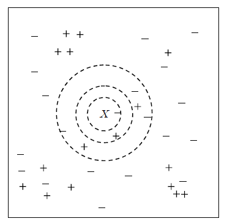
<Figure 7.3.1> 1-nearest, 2-nearest, 7-nearest neighbor data for given data marked with \(\small X\)
If only 1-nearest neighbor is used for classification, there is one - group, and the data \(\small X\)
is classified as the - group. If 2-nearest neighbors are used, there are one + group and one - group data,
so it is difficult to classify the data \(\small X\)
and it can be classified into either group. If 7-nearest neighbors are used, since there are three + groups and four - groups,
the majority rule is used to classify \(\small X\) into the - group.
As seen in these cases, the appropriate selection of \(k\) has a great influence on the classification result.
If \(k\) is too small, the data may be incorrectly classified due to the noise of the data.
If \(k\) is too large, the data may not be classified into a group close to the data.
An algorithm for the nearest neighbor classification model can be summarized as follows.
[
Algorithm for the \(k\) nearest neighbor classification]
Suppose there are \(n\) number of training data with \(m\) variables \(\boldsymbol x_{i}\) and
group variable \(y_i\) as \(\small D = \{(\boldsymbol x_{1}, y_{1}),(\boldsymbol x_{2}, y_{2}), ... , (\boldsymbol x_{n}, y_{n}) \}\).
The algorithm first calculates the similarity distance between the test data \(\boldsymbol x\) to be classified
and all training data. If there is a lot of training data, the calculation of the similarity distance may take
a lot of time. After finding the \(k\) adjacent neighbors \(\small D_{\boldsymbol x}\) using the calculated distance,
the test data \(\boldsymbol x\) is classified into a majority group of these adjacent neighbors,
which can be expressed in the following formula.
$$ \small
y = {argmax}_{v} \; \sum_{(\boldsymbol x_{i}, y_{i}) \in D_{\boldsymbol x}} \; I (v=y_{i})
$$
| Step 1 |
Let \(\boldsymbol x\) be the test data, and \(D = \{(\boldsymbol x_{1}, y_{1}),(\boldsymbol x_{2}, y_{2}), ... , (\boldsymbol x_{n}, y_{n}) \}\)
be the training data. |
| Step 2 |
for test data \(\boldsymbol x\) do |
| Step 3 |
\(\qquad\)for i = 1 to n do |
| Step 4 |
\(\qquad \qquad\)Calculate the distance \(d(\boldsymbol x, \boldsymbol x_{i})\) between \(\boldsymbol x\) and \(\boldsymbol x_{i}\) |
| Step 5 |
\(\qquad\)end for |
| Step 6 |
\(\qquad\)Find the training data set \(D_{\boldsymbol x}\) that is the \(k\) nearest neighbor of \(\boldsymbol x\) |
| Step 7 |
\(\qquad\)Classify \(\boldsymbol x\) into the majority group of \(D_{\boldsymbol x}\), that is
\(\qquad\qquad y = {argmax}_{v} \; \sum_{(\boldsymbol x_{i}, y_{i}) \in D_{\boldsymbol x}} \; I (v=y_{i})\)
|
| Step 8 |
end for |
In this algorthm, when the test data \(\boldsymbol x\) is classified into the majority group of the
\(k\)-nearest neighbor data \(\small D_{\boldsymbol x}\), the distance between \(\boldsymbol x\) and
neighbors \(\boldsymbol x_{i}\) was not considered.
A distance-weighted classification method can be used to compensate for this shortcoming, that has a weighting coefficient
\(\frac{1}{d(\boldsymbol x , \boldsymbol x_{i})^2 }\) which is inversely proportional to the distance.
Example 7.3.1 Using the survey data in Example 7.1.2, classify a customer whose age is 33 years old
and has a monthly income of 190 whether he will buy a product or not, using the 5-nearest neighbor classification model.
Answer
Age and monthly income have different measurement units, so they must be converted to the same unit.
Here, the standardization transformation was used using the sample average of age 29.6 and its
sample standard deviation of 5.623, and the sample average of monthly income 236.5, and sample
standard deviation 95.547 as Table 7.3.1. The standardized value of the customer's data
(33, 190) becomes (0.605, -0.487), and Table 7.3.1 shows the squared Euclidean distance between the customer data and all data.
5-nearest neighbors were colored as yellow background which included 3 of 'No's and 2 of 'Yes's.
Therefore, the customer is classified into 'No" which means he will not purchase a product.
| Table 7.3.1 Standardized data of age and income, and squared Euclid distance of the customer |
| Number |
Age |
Income
(unit 10,000 won) |
Purchase |
Standardized
Age |
Standardized
Income |
Squared Euclid
Distance of customer |
| 1 | 25 | 150 | Yes | -0.818 | -0.905 | 2.199 |
| 2 | 34 | 220 | No | 0.782 | -0.173 | 0.130 |
| 3 | 27 | 210 | No | -0.462 | -0.277 | 1.182 |
| 4 | 28 | 250 | Yes | -0.285 | 0.141 | 1.185 |
| 5 | 21 | 100 | No | -1.529 | -1.429 | 5.441 |
| 6 | 31 | 220 | No | 0.249 | -0.173 | 0.225 |
| 7 | 36 | 300 | Yes | 1.138 | 0.665 | 1.610 |
| 8 | 20 | 100 | No | -1.707 | -1.429 | 6.232 |
| 9 | 29 | 220 | No | -0.107 | -0.173 | 0.605 |
| 10 | 32 | 250 | Yes | 0.427 | 0.141 | 0.426 |
| 11 | 37 | 400 | Yes | 1.316 | 1.711 | 5.337 |
| 12 | 24 | 120 | No | -0.996 | -1.219 | 3.098 |
| 13 | 33 | 350 | No | 0.605 | 1.188 | 2.804 |
| 14 | 30 | 180 | Yes | 0.071 | -0.591 | 0.296 |
| 15 | 38 | 350 | Yes | 1.494 | 1.188 | 3.595 |
| 16 | 32 | 250 | No | 0.427 | 0.141 | 0.426 |
| 17 | 28 | 240 | No | -0.285 | 0.037 | 1.064 |
| 18 | 22 | 220 | No | -1.352 | -0.173 | 3.925 |
| 19 | 39 | 450 | Yes | 1.672 | 2.235 | 8.543 |
| 20 | 26 | 150 | No | -0.640 | -0.905 | 1.725 |
Selection of \(k\) on the neighbor classification
The selection of \(k\) in the nearest neighbor classification model is important for an accurate classification.
The following module of eStatU makes it possible to search for a \(k\) value, which shows better accuracy,
sensitivity or specificity on the nearest neighbor classification. \(k\) is selected when there is no
significant increase in accuracy. Since the number of data is small in this example, it is not easy to decide \(k\).
If we select \(k\) = 5, eStat shows the classification result of all training data.
[Nearest neighbor classification]
Characteristics of the neighbor classification model
The characteristics of the nearest neighbor classification model are summarized as follows.
1) The nearest neighbor classification method is based on the data to be classified, so it does not require a special model,
and only requires a measurement of the similarity between this data and the training data.
If the training data increases, it takes a lot of time and effort to calculate the similarity measure,
and, if an appropriate similarity measure is not used, the classification may not be accurate.
2) The nearest neighbor classification method classifies only using local information of the nearest neighbors of the data
to be classified, so if \(k\) is small and there is much noise in the data, the classification may not be accurate.
3) Since the decision boundary determined by the nearest neighbor classification method is not a function,
it is more flexible than the straight or rectangular classification boundary of a decision tree or other models.
However, a boundary that is too dependent on the training data may not help the stability of the classification.
The number of nearest neighbors should be increased or a distance-weighted classification method
should be considered to prevent this problem.
7.3.1 R and Python practice - Nearest neighbor classification
To use k-nearest neighbor (KNN) classification using R, we need to install a package called
DMwR2.
From the main menu of R,
select ‘Package’ => ‘Install package(s)’, and a window called ‘CRAN mirror’ will appear. Here,
select ‘0-Cloud [https]’ and click ‘OK’. Then, when the window called ‘Packages’ appears, select
‘DMwR2’ and click ‘OK’.
General usage and key arguments of the function are described in the following table.
k-nearest neighbor classification model.
This function provides a formula interface to the existing knn() function of package class. On top of this type of convinient interface, the function also allows standardization of the given data.
|
|
kNN(form, train, test, stand = TRUE, stand.stats = NULL, ...)
|
| form |
An object of the class formula describing the functional form of the classification model. |
| train |
The data to be used as training set. |
| test |
The data set for which we want to obtain the k-NN classification, i.e. the test set. |
| stand |
A boolean indicating whether the training data should be previously normalized before obtaining the k-NN predictions (defaults to TRUE). |
| stand.stats |
This argument allows the user to supply the centrality and spread statistics that will drive the standardization. If not supplied they will default to the statistics used in the function scale(). If supplied they should be a list with two components, each beig a vector with as many positions as there are columns in the data set. The first vector should contain the centrality statistics for each column, while the second vector should contain the spread statistc values. |
An example of R commands for a k-neares neighbor classification with customer data as both training and testing
when k= 5 is as follows.
| install.packages('DMwR2') |
| library(DMwR2) |
| customer <- read.csv('http://estat.me/estat/Example/DataScience/PurchaseAgeIncome_Continuous.csv', header=T, as.is=FALSE) |
| attach(customer) |
Purchase
[1] Yes No No Yes No No Yes No No Yes Yes No No Yes Yes No No No Yes
[20] No
Levels: No Yes
|
| nn <- kNN(Purchase ~ ., customer, customer, k=5) |
nn
[1] No No No No No No Yes No No No Yes No Yes No Yes No No No Yes No
Levels: No Yes
|
To make a classification cross table, we can use a vector of Purchase and nn which is the predicted class
with table command as below.
Using this classification table, accuracy of the model is calculated as 0.75
which is (11+4) / (11+1+4+4).
classtable <- table(Purchase, nn)
Purchase No Yes
No 11 1
Yes 4 4
|
sum(diag(classtable)) / sum(classtable)
[1] 0.75
|
Python practice
[Colab]
# Import required libraries
import pandas as pd
from sklearn.metrics import accuracy_score, confusion_matrix
from sklearn.neighbors import KNeighborsClassifier
customer = pd.read_csv('https://raw.githubusercontent.com/ogut77/DataScience/refs/heads/main/PurchaseByCredit20_Continuous.csv')
# Separate features (X) and target variable (y)
X = customer.drop('Purchase', axis=1)
y = customer['Purchase']
# Initialize and train the KNN model
knn = KNeighborsClassifier(n_neighbors=5) # You can adjust the number of neighbors
knn.fit(X, y)
# Make predictions on the test set
y_pred = knn.predict(X)
# Evaluate the model
accuracy = accuracy_score(y, y_pred)
cm = confusion_matrix(y, y_pred)
print(f"KNN Accuracy: {accuracy}")
print(f"KNN Confusion Matrix:\n{cm}")
|
7.4 Artificial neural network model
The
artificial neural network model is a model that imitates the way the human brain makes decisions and classifies them.
It is said that the human brain is composed of a neural network in which \(10^{11}\) neurons are connected to each other.
When one neuron is stimulated, this stimulation is transmitted to other neurons and the information held
by multiple neurons is synthesized to make a decision. The neural network model connects multiple nodes
into a network similar to the human brain and makes decisions to classify data, as in <Figure 7.4.1>.
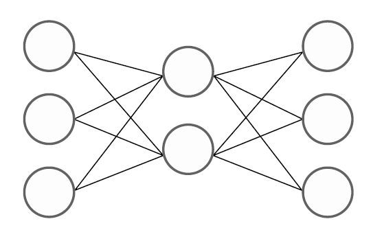
<Figure 7.4.1> Neural network model connects multiple nodes into a network
The artificial neural network model is a model that uses a generalized nonlinear function as a classification function.
The motivation for studying this model is the simple two-group (denoted as o and x) two-dimensional data
as in <Figure 7.4.2>. This data cannot be separated into two groups o and x by a single straight line
(not linearly separable), and can only be separated by two straight lines or nonlinear functions.
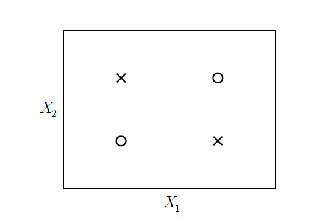
<Figure 7.4.2> Two-dimensional data which cannot be separated into two groups o and x by a single straight line
There are many types of nonlinear functions for classification, so many studies have been conducted
on classification models using generalized nonlinear functions. In 1957, Rosenbalatt of Cornell Aeronautical Laboratory
in the United States used a single-layer neural network model called a perceptron
for character recognition. However, this perceptron could only solve linear problems, so it did not receive much attention.
In 1969, Minsky and Papert of MIT developed a multilayer neural network model that introduced a hidden layer
to the perceptron neural network and showed that classification was possible with a generalized nonlinear function.
In 1982, Hopefield developed a back-propagation algorithm that could effectively estimate the weight coefficients
of a multilayer neural network. Since then, computer performance has improved, making it easier to estimate
weight coefficients using the back-propagation algorithm, and neural network models have been widely used
in real-world problems. In Section 7.4.1, a single-layer neural network model is introduced to understand
neural network models, and in Section 7.4.2, a multilayer neural network model is explained.
7.4.1 Single-layer neural network
To understand the artificial neural network model, Let us look at the following single-layer neural network example.
Example 7.4.1 (Single-layer neural network)
Suppose \(y\) is a group variable where there are two groups, denoted '+1' and '-1', and there are three binary variables
\(x_{1}, x_{2}, x_{3}\) which have values either 0 or 1. If two or more of the three binary variables have the value 1,
classify them as the group ‘+1’, and if they have one or fewer 1 value, classify them as the group ‘-1’ as in Table 7.4.1.
Create a single-layer neural network model that can perform such classification and classify this data.
| Table 7.4.1 Possible values of three binary variables \(x_{1}, x_{2}, x_{3}\) and their group \(y\) |
| Number |
\(x_{1}\) |
\(x_{2}\) |
\(x_{3}\) |
\(y\) |
| 1 | 0 | 0 | 0 | -1 |
| 2 | 0 | 0 | 1 | -1 |
| 3 | 0 | 1 | 0 | -1 |
| 4 | 0 | 1 | 1 | +1 |
| 5 | 1 | 0 | 0 | -1 |
| 6 | 1 | 0 | 1 | +1 |
| 7 | 1 | 1 | 0 | +1 |
| 8 | 1 | 1 | 1 | +1 |
Answer
If the predicted value of the group is \(\hat y\), the above data can be classified using the following linear function
model.
$$ \small
\hat y = \{ \array {\; +1 \quad & if \;\; 0.3 x_{1} + 0.3 x_{2} + 0.3 x_{3} - 0.4 > 0 \cr
\; -1 \quad & if \;\; 0.3 x_{1} + 0.3 x_{2} + 0.3 x_{3} - 0.4 < 0 } \
$$
For example, if \(\small x_{1} = 1, \; x_{2} = 1, \; x_{3} = 0 \), then
\(\small 0.3 x_{1} + 0.3 x_{2} + 0.3 x_{3} - 0.4 = 0.2\), so \(\hat y\) = +1.
If \(\small x_{1} = 0, \; x_{2} = 1, \; x_{3} = 0 \), then
\(\small 0.3 x_{1} + 0.3 x_{2} + 0.3 x_{3} - 0.4 = -0.1 \), so \(\hat y\) = -1.
Let us put aside the discussion of how to create such a linear classification model for a moment
and if we represent the above model as a neural network in an easy-to-understand way,
it is as in <Figure 7.4.3>. This is called a single-layer neural network or
perceptron.
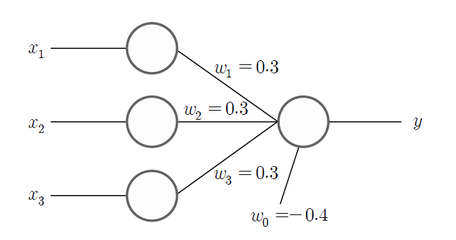
<Figure 7.4.3> Single layer neural network which is a linear classification model
As you can see in the figure, there is an input node to display the value of three variables
\(\small x_{1}, \; x_{2}, \; x_{3} \) and
the output node of the model to display the value of the group variable \(\small y\).
The nodes are also called neurons in neural networks as the human brain.
Each input node is connected to the output node with a weight coefficient, which describes
the connections between neurons in the brain. Just as neurons in the brain can learn and
make decisions, neural networks use data to train the optimal weight coefficients
(in the figure, \(\small w_{1} = 0.3, w_{2} = 0.3, w_{3} = 0.3 \)) that connect
the relationship between input nodes and output nodes. The output node of the neural network
calculates the value \(\hat y\) of the group by adding a constant \(\small w_{0} = -0.4\)
to the linear combination using the weight coefficients of each input node to calculate
the value \(\small w_{0} + w_{1}x_{1} + w_{2}x_{2} + w_{3}x_{3}\), which is called a
linear combination function. The constant \(\small w_{0}\) is called a bias factor.
The sign function \(sign(x)\) is used to investigate the sign of the calculated
linear combination function value which is called an activation function.
In general, when there are \(m\) variables \(x_{1}, x_{2}, ... , x_{m}\) and
the weighting coefficients for each variable are \(w_{1}, w_{2}, ... , w_{m}\)
and the constant term (bias) is \(w_{0}\), the classification function of a single-layer neural network model,
such as Example 7.4.1, can be expressed as a nonlinear function as follows.
$$
\hat y = sign( w_{0} + w_{1}x_{1} + w_{2}x_{2} + \cdots + w_{m}x_{m} )
$$
Here, the linear combination (or weighted sum) of each variable
\(w_{0} + w_{1}x_{1} + w_{2}x_{2} + \cdots + w_{m}x_{m} \) is called a
combination function.
The sign function, \(sign(x)\) that has a value of +1 when \(x\) is positive and a value of -1
when \(x\) is negative, is called an
activation function. The activation function
is a function that converts the input combination function value back into a certain range of values.
The classification function of single-layer neural network is a composite function of a linear combination function
with the sign function.
In the example above, a weighted sum of input information was used as the combination function,
but there are other combination functions such as simple sums of input information, maximum values, minimum values,
or logical ANDs and ORs, but the weighted sum is the most commonly used.
In addition to the sign function \(sign(x)\), examples of frequently used activation functions
are as in Table 7.4.2, and <Figure 7.4.4> shows shapes of these activation functions.
| Table 7.4.2 Examples of activation functions |
| Name |
Activation fuction |
Range |
| \(sign\) function | \(y = sign(x)\) | -1, +1 |
| \(sigmoid\) fuction | \(y = \frac{1}{1+e^{-x}}\) | (0, 1) |
| \(tanh\) function | \(y = \frac{e^{x} - e^{-x}}{e^{x} + e^{-x}}\) | (-1, 1) |
| \(Gauss\) function | \(y = e^{-\frac{x^2}{2}}\) | (0, 1) |
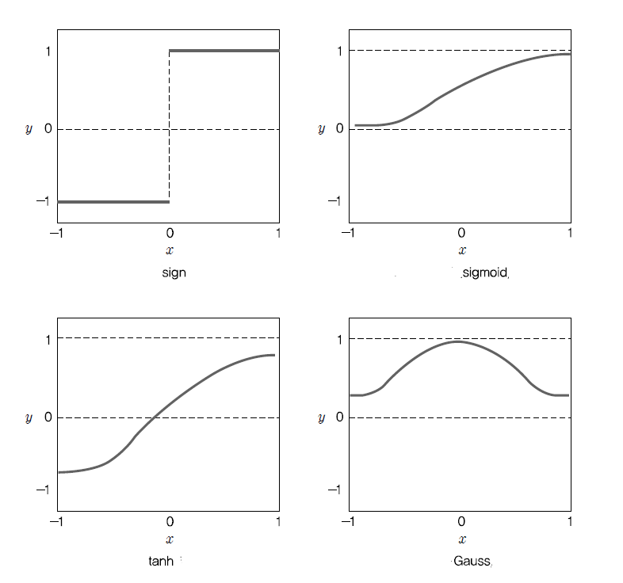
<Figure 7.4.4> Shapes of activation functions
The sigmoid function, which is widely used as an activation function, converts the input value
to a value between (0,1). This function has little effect on the value of \(y\)
when the value of \(x\) is very large or very small. When the sigmoid function
\(y = \frac{1}{1+e^{-x}}\) is differentiated, it has the following good property.
$$
\begin{align}
y' &= \frac{e^{-x}}{(1+e^{-x})^2} \\
&= \frac{1}{1+e^{-x}} (1 - \frac{1}{1+e^{-x}}) \\
&= y (1 - y)
\end{align}
$$
It means that the differentiation of the sigmoid function \(y\) can be easily calculated as \(y(1-y)\).
Because of this property of the sigmoid function, it is widely used in optimization problems
to obtain the rate of change easily.
Learning algorithm for single layer neural network
In the classification function of the single-layer neural network model, estimating the weight coefficients,
\(w_{1}, w_{2}, ... , w_{m}\) and the constant term \(w_{0}\) is called a learning
of the neural network. Let \(n\) training data be
\(D = \{ (x_{i1}, x_{i2}, ... , x_{im}, y_{i}),\; i=1,2,..., n \}\)
and \(w_{1}^{(i)}, w_{2}^{(i)}, ... , w_{m}^{(i)}\) be the \(i\)th iteration estimated values
of the weight coefficients. The weight coefficients of the single-layer neural network are estimated
using an iterative search algorithm as follows.
[
Learning algorithm for the single-layer neural network]
| Step 1 |
Let \(D = \{ (x_{i1}, x_{i2}, ... , x_{im}, y_{i}),\; i=1,2,..., n \}\) be the training data |
| Step 2 |
\(w_{1}^{(0)}, w_{2}^{(0)}, ... , w_{m}^{(0)}\) be the initial estimated value of the coefficients and \(\lambda\) is the learning rate |
| Step 3 |
for i = 1 to n do |
| Step 4 |
\(\qquad\)for j = 1 to m do |
| Step 5 |
\(\qquad \qquad\)Estimate \(y_{i}^{(i)}\) using \(w_{1}^{(i-1)}, w_{2}^{(i-1)}, ... , w_{m}^{(i-1)}\) |
| Step 6 |
\(\qquad \qquad\)\(w_{j}^{(i)} = w_{j}^{(i-1)} + \lambda (y_{i} - y_{i}^{(i)}) x_{ij} \) |
| Step 7 |
\(\qquad\)end for |
| Step 8 |
end for |
In step 2 of the algorithm, the initial values of the weight coefficients
\(w_{1}^{(0)}, w_{2}^{(0)}, ... , w_{m}^{(0)}\) usually use random numbers between 0 and 1.
\(\lambda\) is called a
learning rate and has a value between 0 and 1.
If the learning rate is close to 1, the estimated value changes a lot, and if it is close to 0,
the estimated value changes slowly. In step 5, \(y_{i}^{(i)}\) is the estimated value
when the group value \(y_{i}\) is estimated \(i\) times repeatedly. When this algorithm is repeated
as many times as the number of data (\(i = 1, 2, ... , n\)), we say that
‘the neural network has been trained’.
In step 6, the search algorithm for weight coefficients such as
\(w_{j}^{(i)} = w_{j}^{(i-1)} + \lambda (y_{i} - y_{i}^{(i)}) x_{ij} \) can be intuitively
easily understood. The \(i\)th estimate \(w_{}^{(i)}\) for the weight coefficient of \(x_{j}\)
is obtained by adding a value proportional to the current prediction error \((y_{i} - y_{i}^{(i)})\)
to the previous estimated weight coefficient \(w_{j}^{(i-1)}\).
If the prediction is accurate, \((y_{i} - y_{i}^{(i)})\) = 0, so the weight coefficient does not change.
If the prediction is not accurate, for example, \(y_{i}\) = +1, \(y_{i}^{(i)}\) = -1,
then the prediction error \((y_{i} - y_{i}^{(i)})\) = 2, so in order to increase the estimated value,
the weight coefficient of the input node with a positive value is increased,
and the weight coefficient of the input node with a negative value is decreased.
On the other hand, if \(y_{i}\) = -1, \(y_{i}^{(i)}\) = +1,
then the prediction error \((y_{i} - y_{i}^{(i)})\) = -2, so in order to reduce the estimated value,
the weight coefficient of the input node with a negative value is increased,
and the weight coefficient of the input node with a positive value is decreased.
The above search method is an algorithm that finds weighting coefficients which minimize
the sum of square errors when the estimated value \(\hat y_{i}\) for each data group is found
using the linear combination function \(w_{0} + w_{1}x_{1} + w_{2}x_{2} + \cdots + w_{m}x_{m} \)
and the sigmoid activation function. The sum of squared errors in a single-layer neural network
with \(m+1\) weighting coefficients \(\boldsymbol w = (w_{0}, w_{1}, w_{2}, ... , w_{m})\)
is as follows.
$$
E(\boldsymbol w) = \sum_{i=1}^{n} \; (y_{i} - \hat y_{i})^2
$$
In order to find \(\boldsymbol w = (w_{0}, w_{1}, w_{2}, ... , w_{m})\) that minimizes
the sum of squared errors, we can differentiate \(E(\boldsymbol w)\) partially
with respect to each \(w_{j}\) as follows.
$$
\frac{\partial E(\boldsymbol w)}{\partial w_{j}} = -2 \; \sum_{i=1}^{n} \; (y_{i} - \hat y_{i}) \frac{\partial \hat y_{i}}{\partial w_{j}}
$$
Therefore, one way to search for the weight coefficient \(w_{j}\) that minimizes
the sum of squared errors is to move in the direction of the partial derivatives as follows.
$$
w_{j} \;←\; w_{j} \;-\; \lambda \; \frac{\partial E(\boldsymbol w)}{\partial w_{j}}
$$
In the case of the linear combination function and sigmoid activation function, the algorithm
for searching weight coefficients can be created as follows.
$$
w_{j} \;←\; w_{j} \;-\; \lambda \; (y_{i} - \hat y_{i}) x_{ij}
$$
For more information on the algorithm, please refer to the relevant literature,
and let us examine the learning of a single-layer neural network using the following example.
Example 7.4.2
For the single-layer neural network of Example 7.4.1, train the neural network
with the initial values for the weight coefficients as
\(w_{1}^{(0)}\) = 0.2, \(w_{2}^{(0)}\) = 0.1, \(w_{3}^{(0)}\) = 0.1, the bias \(w_{0}\) = -0.4,
and the learning rate \(\lambda\) = 0.1.
Answer
Table 7.4.3 is the application of the learning algorithm to the single-layer neural network, which calculates
the weighted linear combination
\(\small \boldsymbol w^{(i)} = w_{0} + w_{1}^{(i-1)}x_{1} + w_{2}^{(i-1)}x_{2} + w_{3}^{(i-1)}x_{3}\)
and the estimation of group value \(\small \hat y_{i} = sign(\boldsymbol w^{(i)})\)
using the given initial values.
| Table 7.4.3 Application of learning algorithm to the sigle-layer neural network |
| iteration |
data |
linear combination function |
activation function |
modified coefficients |
| i |
\(x_{i1}\) |
\(x_{i2}\) |
\(x_{i3}\) |
\(y_{i}\) |
\(\small \boldsymbol w^{(i)} = w_{0} + w_{1}^{(i-1)}x_{1} + w_{2}^{(i-1)}x_{2} + w_{3}^{(i-1)}x_{3}\) |
\(\small \hat y_{i} = sign(\boldsymbol w^{(i)})\) |
\(w_{1}^{(i)}\) |
\(w_{2}^{(i)}\) |
\(w_{3}^{(i)}\) |
| 1 | 0 | 0 | 0 | -1 | -0.4 | -1 | 0.2 | 0.1 | 0.1 |
| 2 | 0 | 0 | 1 | -1 | -0.3 | -1 | 0.2 | 0.1 | 0.1 |
| 3 | 0 | 1 | 0 | -1 | -0.3 | -1 | 0.2 | 0.1 | 0.1 |
| 4 | 0 | 1 | 1 | +1 | -0.2 | -1 | 0.2 | 0.3 | 0.3 |
| 5 | 1 | 0 | 0 | -1 | -0.2 | -1 | 0.2 | 0.3 | 0.3 |
| 6 | 1 | 0 | 1 | +1 | 0.1 | +1 | 0.2 | 0.3 | 0.3 |
| 7 | 1 | 1 | 0 | +1 | 0.1 | +1 | 0.2 | 0.3 | 0.3 |
| 8 | 1 | 1 | 1 | +1 | 0.4 | +1 | 0.2 | 0.3 | 0.3 |
Looking at the table, if the actual group value \(\small y_{i}\) and the estimated value
\(\small \hat y_{i}\) are the same, there is no change in the weight coefficient (iterations 1, 2, and 3).
In iteration 4, since the error is (\(\small y_{4} - \hat y_{4}\)) = 2, the weight coefficient of
the variable with \(\small x_{2}\) = 1 and \(\small x_{3}\) = 1 is increased by
\(\small \lambda \times (y_{4} - \hat y_{4}) \times x_{4j}\) = 0.2.
Since the other data have the same group value and predicted value, there is no change
in the weight coefficient, so the estimated final weight coefficient is
\(w_{1}\) = 0.2, \(w_{2}\) = 0.3, \(w_{3}\) = 0.3. That is, the final neural network model is
\(\small \hat y = sign( -0.4 + 0.2 x_{1} + 0.3 x_{2} + 0.3 x_{3} )\). If this estimation formula
is applied to all data, the groups are accurately classified.
It should be noted that the estimation algorithm for the weight coefficients of
a single-layer neural network can have different solutions depending on the initial value
and learning rate. For example, if the initial values are the same and the learning rate is
\(\lambda\) = 0.05, the final weight coefficients are
\(w_{1}\) = 0.2, \(w_{2}\) = 0.25, \(w_{3}\) = 0.25, and this solution also correctly
classifies all data.
7.4.2 Multilayer neural network
The single-layer neural network model classifies data between two groups as a linear classification function.
However, it is not suitable when the data cannot be classified as a linear function, as in <Figure 7.4.2>.
In this case, a
multilayer neural network model which classifies data using a nonlinear function is useful.
<Figure 7.4.5> is an example of Example 7.4.1 expressed as a multilayer neural network.
As shown in the figure, a multilayer neural network consists of an
input layer consisting of input nodes,
a
hidden layer that is a set of intermediate nodes that synthesize the nodes of the input layer,
and an
output layer that synthesizes the nodes of the hidden layer. A neural network like
<Figure 7.4.5> has only one hidden layer, but can create multiple hidden layers, and each layer
can have multiple nodes, so various types of networks can appear.
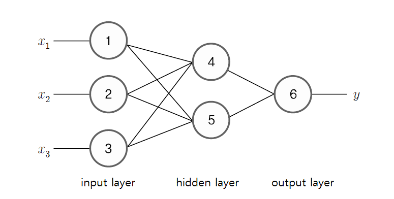
<Figure 7.4.5> Example of multilayer neural network
The neural network in <Figure 7.4.5> can be expressed as a formula as follows. Let the weight coefficients
from the input node ① to the hidden nodes ④ and ⑤ be \(w_{14}\) and \(w_{15}\), let the weight coefficients
from the input node ② to the hidden nodes ④ and ⑤ be \(w_{24}\) and \(w_{25}\), and let the weight coefficients
from the input node ③ to the hidden nodes ④ and ⑤ be \(w_{34}\) and \(w_{35}\).
In the same way, let the weight coefficient from the hidden node ④ to the output node ⑥ be \(w_{46}\),
and let the weight coefficient from the hidden node ⑤ to the output node ⑥ be \(w_{56}\).
And if the bias constants of nodes ④, ⑤, and ⑥ are \(w_{04}, w_{05}, w_{06}\) and the activation function is
\(f_{4}, f_{5}, f_{6}\), then the output values \(O_{4}\) and \(O_{5}\) calculated from hidden nodes ④ and ⑤ are
as follows.
$$
\begin{align}
O_{4} &= f_{4} ( w_{04} + w_{14} x_{1} + w_{24} x_{2} + w_{34} x_{3} ) \\
O_{5} &= f_{5} ( w_{05} + w_{15} x_{1} + w_{25} x_{2} + w_{35} x_{3} )
\end{align}
$$
The value of the output node ⑥, i.e., the estimated value of \(y\), is the value of the activation function
for linear combination of \(O_{4}\) and \(O_{5}\) as follows.
$$
\hat y = f_{6} ( w_{06} + w_{46} O_{4} + w_{56} O_{6} )
$$
If we combine the above equations, the estimated value of \(y\) becomes the following complex nonlinear function.
$$
\hat y = f_{6} ( w_{06} + w_{46} f_{4} ( w_{04} + w_{14} x_{1} + w_{24} x_{2} + w_{34} x_{3} ) + w_{56} f_{5} ( w_{05} + w_{15} x_{1} + w_{25} x_{2} + w_{35} x_{3} ) )
$$
In the above example, if there are multiple hidden layers, more hidden nodes, and multiple output nodes,
the nonlinear function that represents the final output becomes more complex. Therefore,
the design of a multilayer neural network should always consider the following:
- How many hidden layers should there be?
- How many nodes should each hidden layer have?
- Is there a nonlinear function represented by these hidden layers and hidden nodes?
Let us assume that values of all variables, \(\boldsymbol x = (x_{1}, x_{2}, ... , x_{m})\), can be converted
to values between [0,1].
The following theorem shows the existence of a nonlinear function represented
by the multilayer neural network.
Theorem 7.4.1 Approximation of a continuous function (Kolmogorov)
When a continuous function \(f(\boldsymbol x)\) is defined on \([0,1]^{m}\), this function can be expressed
as follows.
$$
f(\boldsymbol x) = \sum_{k=1}^{2m+1} \; \Theta_{k} \left[ \sum_{j=1}^{m} \; \phi_{jk} (x_{j}) \right]
$$
Here, \(\Theta_{k}\) and \(\phi_{jk}\) are appropriately chosen functions.
This theorem can be interpreted as a neural network as follows. For the input nodes of variables
\(x_{1}, x_{2}, ... , x_{m}\), \((2m + 1)\) hidden nodes receive the sum of nonlinear functions \(\phi_{jk} (x_{j})\).
Each hidden node receiving this value outputs a nonlinear function \(\Theta_{k}\), and
the final output node calculates the sum of these. In other words, assuming that there is a nonlinear
function \(y = f(\boldsymbol x)\), this function can be approximated by a composite function of combination functions
and activation functions, such as equation in the Theorem 7.4.1. A neural network model consisting of
this complex approximation function is often called a black box. It is not known exactly
how many hidden nodes can approximate the function \(y = f(\boldsymbol x)\) well.
Design of multilayer neural network model
The neural network model is experimented with various combinations of the number of hidden layers
and the number of nodes through trial and error, and the general design method is as follows.
1) Data preparation
In the case of continuous variables, units of variables may be different, so the variable values are usually converted to be
between 0 and 1. A simple conversion method is to subtract the minimum value from the actual data value and
then divide it by the possible range of the variable (maximum value - minimum value). For ordinal variables,
the smallest ordinal value is set to 0, the larger ordinal value is set to 1, and the ordinal values in between are converted
proportionally. In the case of categorical variables, each category value is usually treated as one variable,
and a binomial value of 0 or 1 is used depending on the presence or absence of the category value.
It is desirable to have a certain number of data for each category value, but if the number of data is small,
it is sometimes combined with adjacent category values. Missing values are either removed or replaced
by estimating a value appropriate for the data.
2) Number of input nodes
If the variable is binomial or continuous data, assign one input node to each variable. If the variable
is categorical, assign one input node to each categorical value.
3) Number of output nodes
If there are two groups, one output node is sufficient. If there are \(K\) groups, assign \(K\) output nodes.
4) Number of hidden layers and number of hidden nodes
Determining the number of hidden layers and number of hidden nodes is a problem of determining
the nonlinear function of the neural network model. If the number of hidden layers and hidden nodes increases,
the model may be overfitted, so if possible, it is good to have a model that can classify satisfactorily
with a small number of hidden layers and hidden nodes. However, there is no exact method to find
the optimal number of hidden layers and hidden nodes. Usually, after setting the number of hidden layers and
hidden nodes sufficiently, we reduce them one by one and select a model with high accuracy and
a small number of hidden layers and hidden nodes. At this time, model selection criteria such as
AIC (Akaike information criteria) can be used.
If possible, it is good to obtain the classification function by setting the number of hidden layers to 1.
However, if too many nodes are created in one hidden layer, the number of hidden layers is set to two,
and the number of nodes in each layer is reduced. It is usually done so that the number of nodes in each layer
does not exceed twice the number of nodes in the input layer. Experiments to determine the number of
hidden layers and nodes take the most time in artificial neural network models.
5) Selection of activation function
Among the activation functions in Table 7.4.2, the sigmoid function, which is useful for the estimation algorithm
of weight coefficients, is often used. The activation function is known to affect the algorithm speed
during the training process of a neural network but does not have a significant effect on the results.
6) Initial value problem
Algorithms that estimate the weight coefficients of a multilayer neural network model require initial values,
and most of them randomly generate values between -1 and 1. Since there is a possibility that a given initial value
will find a local solution, it is necessary to experiment several times to find the same weight coefficients
by trying various initial values.
7) Interpretation of output variables
If there are two groups and one output node, the output value is a continuous value, so it can be classified
based on an appropriate boundary value. If there are multiple groups, the number of output nodes is usually
the same as the number of groups, and the group is classified based on the value of the output node
that is large (or small).
8) Sensitivity analysis
After obtaining the solution of the neural network using training data, it is a good idea to conduct
sensitivity analysis to determine the relative importance of the input variables. Change the value of
the input variable from the minimum to the maximum and examine the change in the output value.
Learning algorithm of multilayer neural networks
The process of estimating the weight coefficients of a multilayer neural network model is called
learning of the neural network. Since a multilayer neural network is a complex nonlinear function model,
estimating the weight coefficients is not easy. The learning algorithm for a single-layer neural network
is not suitable for a multilayer neural network with a nonlinear function that has many weight coefficients.
The estimation of the weight coefficients in a multilayer neural network uses the
gradient descent method.
Let the input node values of a multilayer neural network with \(m\) input variables be
\(\boldsymbol x = (x_{1}, x_{2}, ... , x_{m})\). Let the weight coefficient connecting node \(j\) to node \(k\)
in the neural network be \(w_{jk}\), the constant coefficient at this time be \(w_{0k}\), and
let all the weight coefficients appearing in this neural network be \(\boldsymbol w\).
The output of the neural network can be expressed as \(\hat y = f(\boldsymbol x : \boldsymbol w )\),
where the function \(f\) is a composite function of several combination functions and activation functions
as in Theorem 7.4.1. In order to find the weight coefficient \(\boldsymbol w\) of the multilayer neural network,
it is reasonable to minimize the distance \(d(y_{i}, \hat y_{i})\) between the observed group value
\(y_{i}\) of all data and the estimated value \(\hat y_{i}\) of the neural network.
If we use the Euclidean square distance, we find the weight coefficient that minimizes the error sum of squares
\(\small E(\boldsymbol w )\) as follows.
$$
E(\boldsymbol w ) = \sum_{i=1}^{n} \; ( y_{i} - \hat y_{i} )^2
$$
To find \(\boldsymbol w\) that minimizes the error sum of squares, we differentiate \(\small E(\boldsymbol w )\)
with respect to each \(w_{jk}\) as follows.
$$
\frac{\partial E(\boldsymbol w )}{\partial w_{jk}} = -2 \sum_{i=1}^{n} \; ( y_{i} - \hat y_{i} ) \; \frac{\partial \hat y_{i}}{\partial w_{jk} }
$$
If \(\hat y_{i}\) is estimated using the sigmoid activation function, the rate of change of the estimated value,
\(\small \frac{\partial \hat y_{i}}{\partial w_{jk} }\), is proportional to \(\hat y_{i} (1 - \hat y_{i}) \)
due to the differentiation characteristic of the sigmoid function. Therefore, we can create an algorithm
to search for weight coefficients as follows.
$$
w_{jk} \;←\; w_{jk} \;-\; \lambda \; \frac{\partial E(\boldsymbol w )}{\partial w_{jk} }
$$
Here, \(\lambda\) is the learning rate, which has a value between 0 and 1.
\(\frac{\partial E(\boldsymbol w )}{\partial w_{jk} }\) means the gradient descent rate, which implies
that the estimation of weight coefficients should be adjusted in the direction that decreases
the total error sum of squares. If the output value of input node \(j\) is \(O_{j}\) and
the error at output node \(k\) is \(E_{k}\), the above update of weight coefficients is as follows.
$$
w_{jk} \;←\; w_{jk} \;-\; \lambda \; E_{k} O_{j}
$$
Here, \(\small \lambda \; E_{k} O_{j}\) is the change amount of the weight coefficient,
which is the same concept as the estimation of the weight coefficient of the single-layer neural network.
That is, the weight coefficient is updated as a learning rate \(\lambda\) proportional to the input
\(O_{j}\) from node \(j\) by considering the error \(E_{k}\) of node \(k\).
In a similar way, the bias constant \(w_{0k}\) is updated as follows.
$$
w_{0k} \;←\; w_{0k} \;-\; \lambda \; E_{k}
$$
In this algorithm, the estimation of \(E_{k}\) and \(O_{j}\) is not easy when applied to the hidden nodes
in the multilayer neural network model, so the back-propagation algorithm developed by Hopefield is used.
The back-propagation algorithm sets a criterion for optimizing the initial weight coefficients and
the objective function, and divides it into the forward step and the backward step to repeatedly update
the weight coefficients. In the forward step, the estimated weight coefficients are used to calculate
the output values of all nodes, and the output values of the nodes in the layer \(l\) are used
to calculate the output values of the nodes in the layer \(l+1\). In the backward step, the output values
and error values for the nodes in the calculated layer \(l+1\) are used to estimate the error values for the nodes in the layer \(l\) and the weight coefficients are updated. This method is repeatedly applied
until the weight coefficients hardly change or the objective function value is optimized,
and the algorithm is stopped.
When the sigmoid activation function is used in the multilayer neural network in <Figure 7.4.5>,
let us estimate the weight coefficients by applying the back-propagation algorithm.
First, the initial weight coefficients are used to obtain the output values \(O_{1}, O_{2}, ..., O_{6}\)
of each node. Here, \(O_{1}, O_{2}, O_{3}\) are the values of the input variable \(x_{1}, x_{2}, x_{3}\).
The key is how to obtain the error \(E_{k}\) of each node. In the back-propagation algorithm,
it is estimated by considering the weighted sum of the errors of all nodes connected to node \(k\).
In the case of a sigmoid function, the rate of change \(\small \frac{\partial \hat y_{i}}{\partial w_{jk} }\)
is proportional to \(\hat y_{i} (1 - \hat y_{i}) \), so the error \(E_{6}\) of the output node ⑥
is estimated as follows.
$$
E_{6} \;=\; O_{6}(1-O_{6})(y_{i} - O_{6})
$$
Here, \(O_{6}(1-O_{6})\) denotes the rate of change \(\hat y_{i}(1 - \hat y_{i})\), and
the \((y_{i}-O_{6})\) term denotes the estimation error \((y_{i} - \hat y_{i})\).
That is, the meaning of the error \(E_{6}\) is the estimation error \((y_{i} - O_{6})\)
multiplied by the error change rate \(O_{6}(1-O_{6})\).
The error \(E_{5}\) of hidden node ⑤ is calculated by multiplying the error change rate
\(O_{5}(1-O_{5})\) by the weighted sum of errors of all nodes connected to node ⑤,
which is called the back-propagation of the error. That is,
$$
E_{5} \;=\; O_{5}(1-O_{5}) \sum_{k} \; w_{5k} E_{k}
$$
After calculating the error \(E_{4}\) of hidden node ④ in a similar way, the weight coefficients are updated.
Let us look at the back-propagation algorithm for estimating the weight coefficient of
a multilayer neural network through the following example.
Example 7.4.3 (Learning algorithm of the multilayer neural network)
For the multilayer neural network model in Figure 7.4.5, let the input data be group 1 and
the variable values be (\(x_{1}, x_{2}, x_{3}\) ) = (1, 0, 1). Let us find the weight coefficient
and bias of the model equation using the back-propagation algorithm of the gradient descent method.
The same sigmoid function, f(x), is used for all activation functions, and the initial values of the weight coefficient
and bias are set as follows using a random number between (-1,1). Let the learning rate be \(\lambda\) = 0.1.
| Table 7.4.4 Initial values of the weight coefficients for the multilayer neural network in Figure 7.4.5 |
| \(w_{14}\) |
\(w_{15}\) |
\(w_{24}\) |
\(w_{25}\) |
\(w_{34}\) |
\(w_{35}\) |
\(w_{46}\) |
\(w_{56}\) |
\(w_{04}\) |
\(w_{05}\) |
\(w_{06}\) |
| -0.51 |
-0.99 |
0.35 |
-0.45 |
0.39 |
0.19 |
0.27 |
0.71 |
-0.75 |
-0.09 |
0.18 |
Answer
The forward step of the back-propagation algorithm calculates the output values of all nodes using the given
initial values. In the neural network of <Figure 7.4.5>, the output values \(O_{1}, O_{2}, O_{3}\)
of nodes ①, ②, and ③ are the values of the input variables \(x_{1}, x_{2}, x_{3}\), and the output values
of nodes ④, ⑤, and ⑥ are as follows, using the given initial weight coefficients.
$$ \small
\begin{align}
O_{4} &= f( w_{14} x_{1} + w_{24} x_{2} + w_{34} x_{3} + w_{04} ) \\
&= f( -0.51 \times 1 \;+\; 0.35 \times 0 \;+\; 0.39 \times 1 \;-\; 0.75 \\
&= f(-0.87) = 0.2953 \\
O_{5} &= f( w_{15} x_{1} + w_{25} x_{2} + w_{35} x_{3} + w_{05} ) \\
&= f( -0.99 \times 1 \;-\; 0.45 \times 0 \;+\; 0.19 \times 1 \;-\; 0.09 \\
&= f(-0.89) = 0.2911 \\
O_{6} &= f( w_{46} O_{4} + w_{56} O_{6} + w_{06} ) \\
&= f( 0.27 \times 0.2953 \;+\; 0.71 \times 0.2911 \;+\; 0.18 \\
&= f(0.4664) = 0.6145 \\
\end{align}
$$
The backward step of the back-propagation algorithm first estimates the error \(\small E_{6}\) of node ⑥,
and then estimates the errors of nodes ④ and ⑤. The estimation of the error \(\small E_{6}\) of node ⑥
is as follows.
$$ \small
\begin{align}
E_{6} \;&=\; O_{6}(1-O_{6})(y_{i} - O_{6}) \\
&=\; 0.6145 \times (1-0.6145) \times (1 - 0.6145) = 0.0913
\end{align}
$$
Here, the \(\small O_{6}(1-O_{6})\) term is the rate of change from the differentiation of the sigmoid function
and \(y\) is the actual group value. The meaning of the error \(\small E_{6}\) is the estimation error,
\(\small y_{i} - O_{6}\), multiplied by the error change rate \(\small O_{6}(1-O_{6})\).
The error \(\small E_{5}\) of hidden node ⑤ is calculated by multiplying the error change rate
\(\small O_{5}(1-O_{5})\) by the error weighted sum of all nodes connected to node ⑤,
which is called back-propagation of the error. That is,
$$
E_{5} \;=\; O_{5}(1-O_{5}) \sum_{k} \; w_{5k} E_{k}
$$
In this problem, since there is only node ⑥ connected to node ⑤, \(\small E_{5}\) is as follows.
The error \(\small E_{4}\) of node ④ is also calculated in the same way.
$$ \small
\begin{align}
E_{5} \;&=\; O_{5}(1-O_{5}) w_{56} E_{6}) \\
&=\; 0.2911 \times (1-0.2911) \times 0.71 \times 0.0913 = 0.0134 \\
E_{4} \;&=\; O_{4}(1-O_{4}) w_{46} E_{6}) \\
&=\; 0.2953 \times (1-0.2953) \times 0.27 \times 0.0913 = 0.0051 \\
\end{align}
$$
Therefore, the updated weight coefficients and biases are as follows.
$$ \small
\begin{align}
w_{46} \;&←\; w_{46} + \lambda E_{6} O_{4} \;=\; 0.27 + 0.1 \times 0.0913 \times 0.2953 \;=\; 0.2727 \\
w_{56} \;&←\; w_{56} + \lambda E_{6} O_{5} \;=\; 0.71 + 0.1 \times 0.0913 \times 0.2911 \;=\; 0.7127 \\
w_{14} \;&←\; w_{14} + \lambda E_{4} x_{1} \;=\; -0.51 + 0.1 \times 0.0051 \times 1 \;=\; -0.5095 \\
w_{15} \;&←\; w_{15} + \lambda E_{5} x_{1} \;=\; -0.99 + 0.1 \times 0.0134 \times 1 \;=\; -0.9887 \\
w_{24} \;&←\; w_{24} + \lambda E_{4} x_{2} \;=\; +0.35 + 0.1 \times 0.0051 \times 0 \;=\; 0.3500 \\
w_{25} \;&←\; w_{25} + \lambda E_{5} x_{2} \;=\; -0.99 + 0.1 \times 0.0134 \times 0 \;=\; -0.4500 \\
w_{34} \;&←\; w_{34} + \lambda E_{4} x_{3} \;=\; +0.39 + 0.1 \times 0.0051 \times 1 \;=\; 0.3905 \\
w_{35} \;&←\; w_{35} + \lambda E_{5} x_{3} \;=\; +0.19 + 0.1 \times 0.0134 \times 1 \;=\; 0.1913 \\
w_{04} \;&←\; w_{04} + \lambda E_{4} \;=\; -0.75 + 0.1 \times 0.0051 \;=\; -0.7495 \\
w_{05} \;&←\; w_{06} + \lambda E_{5} \;=\; -0.09 + 0.1 \times 0.0134 \;=\; -0.0887 \\
w_{06} \;&←\; w_{06} + \lambda E_{6} \;=\; +0.18 + 0.1 \times 0.0913 \;=\; 0.1891 \\
\end{align}\;
$$
In the back-propagation algorithm, it should be noted that the estimation of weight coefficients can vary
depending on the initial value and learning rate. If the learning rate \(\lambda\) is increased,
the weight coefficients change quickly, and if the learning rate is decreased, the weight coefficients change slowly.
It is recommended to conduct experiments with a high learning rate at first, and then gradually conduct experiments
with a lower learning rate. Usually, a learning rate value between 0.05 and 0.7 is often used.
When the back-propagation algorithm is repeated as many times as the number of data, it is said that
the ‘neural network has learned’, but if the neural network is complex, the global optimal solution of
the objective function may not be obtained, but a local optimal solution may be obtained,
so caution is required. In algorithms that handle nonlinear functions, the final solution may be
a local optimal value or a global optimal value depending on the initial value, so experiments
should be conducted repeatedly through trial and error. Usually, as an initial value, a random number
is selected from a uniform distribution in a certain area, and after an experiment, the initial value
that shows the best result is selected.
Deep learning
If there are many hidden layers in a multilayer neural network, the back-propagation algorithm often cannot find
the weight coefficients successfully because of vanishing gradients where data disappears and
learning does not proceed well. However, in 2006, Professor Geoffrey Hinton of the University of Toronto
solved the vanishing gradient problem through the pretraining of neural networks and drop-out data,
and began calling the neural network model that applied this algorithm as deep learning.
This algorithm is beyond the scope of this book and please refer related references.
Characteristics of neural network models
The characteristics of neural network models are summarized as follows.
1) In real data for classification, neural network models are evaluated to show somewhat better results than other models. In particular, they are more useful when the number of variables is large and the input and output variables have complex nonlinear function forms.
2) Since it is not easy to explain why the neural network model was classified that way for the classification results, this model is sometimes called a black box. The difficulty in interpreting the model can be considered a disadvantage of neural networks because it can be difficult to modify the model.
3) Multilayer neural networks estimate nonlinear classification functions and require at least one hidden layer. Determining the appropriate number of hidden layers and hidden nodes is very important to avoid overfitting the model. Neural network models show satisfactory results in training data, but in actual applications, classification is sometimes inaccurate. This is mainly due to overfitting of the model.
4) Neural networks do not show a sensitive response even if there is noise in the training data. Therefore, it is not easy to identify errors in input information.
5) The gradient descent method used to estimate the weight coefficients of neural networks can find local solutions.
Therefore, it is necessary to investigate whether it is a local solution or not by various methods such as changing the initial value or analyzing the sensitivity of the data.
6) The training process of a neural network is a very time-consuming task when the number of hidden layers and nodes is large.
However, after training, test data can be classified quickly.
7.4.3 R and Python practice - Neural network
To use the neural network model using R, we need to install a package called
nnet.
From the main menu of R,
select ‘Package’ => ‘Install package(s)’, and a window called ‘CRAN mirror’ will appear. Here,
select ‘0-Cloud [https]’ and click ‘OK’. Then, when the window called ‘Packages’ appears, select
‘nnet’ and click ‘OK’. 'nnet' is a package for modeling of the neural network classification model.
General usage and key arguments of the function are described in the following table.
| nnet {nnet} |
Fit Neural Networks
Fit single-hidden-layer neural network, possibly with skip-layer connections.
|
## S3 method for class 'formula'
nnet(formula, data, weights, ..., subset, na.action, contrasts = NULL)
## Default S3 method:
nnet(x, y, weights, size, Wts, mask, linout = FALSE, entropy = FALSE, softmax = FALSE, censored = FALSE, skip = FALSE, rang = 0.7, decay = 0, maxit = 100, Hess = FALSE, trace = TRUE, MaxNWts = 1000, abstol = 1.0e-4, reltol = 1.0e-8, ...)
|
| formula |
A formula of the form class ~ x1 + x2 + ... |
| x |
matrix or data frame of x values for examples. |
| y |
matrix or data frame of target values for examples. |
| weights |
(case) weights for each example – if missing defaults to 1. |
| size |
number of units in the hidden layer. Can be zero if there are skip-layer units. |
| data |
Data frame from which variables specified in formula are preferentially to be taken. |
| subset |
An index vector specifying the cases to be used in the training sample. |
| na.action |
A function to specify the action to be taken if NAs are found. The default action is for the procedure to fail. An alternative is na.omit, which leads to rejection of cases with missing values on any required variable. |
| contrasts |
a list of contrasts to be used for some or all of the factors appearing as variables in the model formula. |
| Wts |
initial parameter vector. If missing chosen at random. |
| mask |
logical vector indicating which parameters should be optimized (default all). |
| linout |
switch for linear output units. Default logistic output units. |
| entropy |
switch for entropy (= maximum conditional likelihood) fitting. Default by least-squares. |
| softmax |
switch for softmax (log-linear model) and maximum conditional likelihood fitting. linout, entropy, softmax and censored are mutually exclusive. |
| censored |
A variant on softmax, in which non-zero targets mean possible classes. Thus for softmax a row of (0, 1, 1) means one example each of classes 2 and 3, but for censored it means one example whose class is only known to be 2 or 3. |
| skip |
switch to add skip-layer connections from input to output. |
| rang |
Initial random weights on [-rang, rang]. Value about 0.5 unless the inputs are large, in which case it should be chosen so that rang * max(|x|) is about 1. |
| decay |
parameter for weight decay. Default 0. |
| maxit |
maximum number of iterations. Default 100. |
| Hess |
If true, the Hessian of the measure of fit at the best set of weights found is returned as component Hessian. |
| trace |
switch for tracing optimization. Default TRUE. |
| MaxNWts |
The maximum allowable number of weights. There is no intrinsic limit in the code, but increasing MaxNWts will probably allow fits that are very slow and time-consuming. |
| abstol |
Stop if the fit criterion falls below abstol, indicating an essentially perfect fit. |
| reltol |
Stop if the optimizer is unable to reduce the fit criterion by a factor of at least 1 - reltol. |
An example of R commands for the single-layer neural network model using the data as in Example 7.4.2 is as follows.
| install.packages('nnet') |
| library(nnet) |
| singleNNdata <- read.csv('http://estat.me/estat/Example/DataScience/SingleNN.csv', header=T, as.is=FALSE) |
| attach(signleNNdata) |
singleNNdata
x1 x2 x3 y
1 0 0 0 -1
2 0 0 1 -1
3 0 1 0 -1
4 0 1 1 1
5 1 0 0 -1
6 1 0 1 1
7 1 1 0 1
8 1 1 1 1
|
# create a training data using the 8 data.
train <- singleNNdata[1:8,] |
# create a testing data using the same 8 data
test <- singleNNdata[1:8,] |
train.nnet <- nnet(y~x1+x2+x3,data=train, size=2, rang=0.1, decay=5e-4, maxit=100)
# weights: 11
initial value 10.068006
iter 10 value 7.626637
iter 20 value 4.217955
iter 30 value 4.133499
iter 40 value 4.129743
iter 50 value 4.129625
iter 60 value 4.129609
iter 70 value 4.129607
iter 80 value 4.129601
final value 4.129595
converged
|
summary(train.nnet)
a 3-2-1 network with 11 weights
options were - decay=5e-04
b->h1 i1->h1 i2->h1 i3->h1
4.14 -3.06 -3.06 -3.06
b->h2 i1->h2 i2->h2 i3->h2
4.05 -3.01 -3.01 -3.01
b->o h1->o h2->o
4.63 -7.37 -7.17
|
In the summary, 3-2-1 network implies that there are 3 input layers (i1, i2, i3) - 2 hidden layers (h1, h2)
- 1 output layer (o). There are 11 weights and b->h1 implies the bias constant to the hidden layer h1 which is 4.14.
i1->h1 implies the weight coefficient from input layer i1 to the hidden layer h1 which is -3.06 etc.
Therefore, the linear combination function to h1 is 4.14 - 3.06 × i1 - 3.06 × i2 - 3.06 × i3,
the linear combination function to h2 is 4.05 - 3.01 × i1 - 3.01 × i2 - 3.01 × i3, and
the linear combination function to o is 4.63 - 7.37 × h1 - 7.17 × h2.
The R command to classify the groups by testing all 8 data using the above model is as follows.
First, if we classify the test data using the predict command with default activation function,
the result will be a number.
predict(train.nnet,test)
[,1]
1 0.0000619568
2 0.0020718984
3 0.0020859221
4 0.9453979298
5 0.0020719570
6 0.9452023418
7 0.9453977511
8 0.9893836166
|
If we observe this and classify the data using 0.1 as the reference value, all data will be classified accurately.
| nnetpred <- (predict(train.nnet,test) >= 0.01)
|
table(nnetpred,y)
y
nnetpred -1 1
FALSE 4 0
TRUE 0 4
|
Python practice
[Colab]
# Import required libraries
import pandas as pd
import numpy as np
from sklearn.neural_network import MLPClassifier
# Load data
singleNNdata = pd.read_csv('https://raw.githubusercontent.com/ogut77/DataScience/refs/heads/main/singleNN.csv')
# Create training and testing data using the first 8 rows
train = singleNNdata.iloc[:8]
test = singleNNdata.iloc[:8]
# Prepare features and target for training
X_train = train[['x1', 'x2', 'x3']]
y_train = train['y']
# Initialize and train the neural network
# size=2 (2 hidden neurons), decay=5e-4 (weight decay), maxit=100 (max iterations)
nn_model = MLPClassifier(hidden_layer_sizes=(2,),
alpha=5e-4,
max_iter=100,
random_state=0,
learning_rate_init=0.1) # rang=0.1 maps to initial learning rate
nn_model.fit(X_train, y_train)
# Print model summary
print("Number of layers:", nn_model.n_layers_)
print("Number of neurons in hidden layer:", nn_model.hidden_layer_sizes)
print("Output layer activation:", nn_model.out_activation_)
print("Loss:", nn_model.loss_)
print("Number of iterations:", nn_model.n_iter_)
print("Weights:", nn_model.coefs_)
print("Biases:", nn_model.intercepts_)
# Neural Network - Predictions and Confusion Matrix
y_pred_nn = nn_model.predict(X_test)
y_pred_prob = nn_model.predict_proba(X_test)
accuracy_nn = accuracy_score(y_test, y_pred_nn)
cm_nn = confusion_matrix(y_test, y_pred_nn)
print(f"Neural Network Probability Prediction:\n {y_pred_prob}")
print(f"Neural Network Accuracy: {accuracy_nn}")
print(f"Neural Network Confusion Matrix:\n{cm_nn}")
|
7.5 Support vector machine model
Support vector machine (SVM) model determines a classification function, called a support vector,
using training data. The SVM model has recently attracted attention and has been applied in many fields.
The SVM model is divided into the linear SVM that uses a linear classification function and
the nonlinear SVM that uses a nonlinear classification function.
7.5.1 Linear support vector machine
Consider the two-dimensional training data for two groups, indicated as '+' and '-' group, as in <Figure 7.5.1>.
In this data, the two groups can be classified well without misclassification using a single straight line,
but there are too many possible straight lines that can accurately classify two groups. Therefore, we need to consider
which straight line can lead to less misclassification of the test data. Let us compare the two straight lines
\(L_{1}\) and \(L_{2}\) in the figure. \(L_{1}\) is a straight line that bisects the point on the far right of
the '+' group and the point on the far left of the '-' group on the \(x\)-axis, and the distance between
the straight lines passing through the two points is \(d_{1}\). \(L_{2}\) is a straight line that bisects
the point on the far right of the '+' group and the point on the far left of the '-' group, and the distance
between the straight lines passing through the two points is \(d_{2}\). If these two straight lines are used
to classify the test data, the distance (margin) \(d_{1}\) is larger than
the distance \(d_{2}\), so \(L_{1}\) has less possibility of misclassification in actual classification.
Linear SVM is a method to determine a linear classification function so that the distance, such as
\(d_{1}\), is maximized.
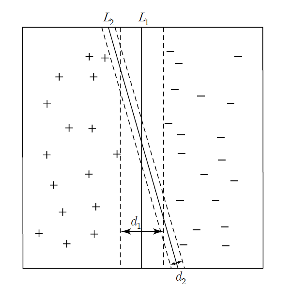
<Figure 7.5.1> Comparison of two lines for classification
The distance \(d_{1}\) of \(L_{1}\) is larger than \(d_{2}\) of \(L_{2}\),
so \(L_{1}\) has less possibility of misclassification.
Linear SVM can be explained by dividing the data of two groups into cases where they can be linearly separable
using a linear classification function as shown in <Figure 7.5.1> and cases where they cannot be linearly separable.
A. Linearly separable case
Suppose that there are two groups denoted ‘+1’ and ‘-1’ groups, \(m\) independent variables
\(\boldsymbol x = (x_{1}, x_{2}, ... , x_{m})\) and a targent (group) variable \(y\).
The \(n\) training data observed for these variables are denoted as
\(D = \{ (\boldsymbol x_{i}, y_{i}),\; i=1,2,..., n \} \) using vector notation,
where \(\boldsymbol x_{i} = (x_{i1}, x_{i2}, ... , x_{im})\) and
the target variable \(y_{i}\) can have a value of +1 or -1.
The linear classification equation for \(m\) variables is expressed as follows.
$$
w_{0} + w_{1}x_{1} + w_{2}x_{2} + \cdots + w_{m}x_{m} = 0
$$
This is a general hyperplane equation in \(m\)-dimensional space,
and \(w_{0}, w_{1}, w_{2}, ... , w_{m}\) are the parameters to be estimated. Using a vector notation
\(\boldsymbol w = (w_{1}, w_{2}, ... , w_{m})\) and an inner product notation, \(\cdot \) , of vectors,
the above equation can be expressed as follows.
$$
\boldsymbol w \;\cdot\; \boldsymbol x \;+\; w_{0} = 0
$$
If the data \(\boldsymbol x_{i}\) is on this hyperplane, then \(\boldsymbol w \;\cdot\; \boldsymbol x_{i} \;+\; w_{0} = 0\).
If the data \(\boldsymbol x_{i}\) is above the hyperplane, then
\(\boldsymbol w \;\cdot\; \boldsymbol x_{i} \;+\; w_{0} > 0\), and if it is below the hyperplane, then
\(\boldsymbol w \;\cdot\; \boldsymbol x_{i} \;+\; w_{0} < 0\).
If the value of \(w_{0}\) is adjusted appropriately, the classification formula that distinguishes the two groups
can be written as follows.
$$
\array
{ \text{if} \;\; \boldsymbol w \;\cdot\; \boldsymbol x \;+\; w_{0} \;≥\; 1, \;\;\;\;\; \text{classify }\; \boldsymbol x \; \text{into} \; y = 1 \cr
\;\;\;\;\text{if} \;\; \boldsymbol w \;\cdot\; \boldsymbol x \;+\; w_{0} \;≤\; -1, \;\; \text{classify }\; \boldsymbol x \; \text{into} \; y = -1
}
$$
Here, \(\boldsymbol w \;\cdot\; \boldsymbol x_{i} \;+\; w_{0} = 1\) is a hyperplane passing through the points
on the boundary of the group \(y = +1\), and \(\boldsymbol w \;\cdot\; \boldsymbol x_{i} \;+\; w_{0} = -1\) is
a hyperplane passing through the points on the boundary of the group \(y = -1\). These two hyperplanes are called
support vectors, and the distance \(d\) between the two groups is the distance between
these two hyperplanes. The classification equation above, which applies to data, can be expressed as follows.
$$
y_{i} \;( \boldsymbol w \;\cdot\; \boldsymbol x_{i} \;+\; w_{0}) \;≥\; 1, \;\; i=1,2,...,n
$$
As shown in <Figure 7.5.2>, there can be multiple hyperplanes that can classify the two groups in data
and the one that has the largest distance of margin between
the data on the boundaries of the two groups on the hyperplane can minimize misclassification error.
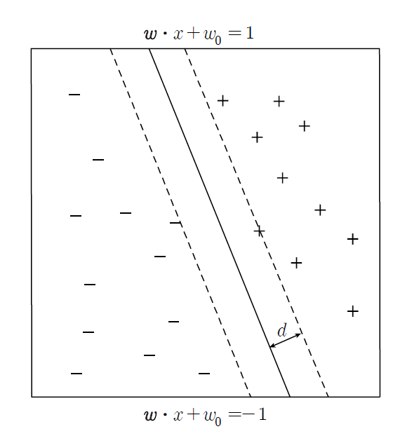
<Figure 7.5.2> A hyperplane that can classify two groups in data.
The hyperplane that maximizes the distance (margin \(d\)) is likely to have less misclassification
in actual classification.
If \(\boldsymbol x_{1}\) lies in the hyperplane \(\boldsymbol w \;\cdot\; \boldsymbol x_{i} \;+\; w_{0} \;=\; 1\),
then \(\boldsymbol w \;\cdot\; \boldsymbol x_{1} \;+\; w_{0} \;=\; 1\), and
if \(\boldsymbol x_{2}\) lies in the hyperplane \(\boldsymbol w \;\cdot\; \boldsymbol x_{i} \;+\; w_{0} \;=\; -1\),
then \(\boldsymbol w \;\cdot\; \boldsymbol x_{2} \;+\; w_{0} \;=\; -1\). Therefore, we have the followings.
$$
\boldsymbol w \;\cdot\; ( \boldsymbol x_{1} \;-\; \boldsymbol x_{2}) \;=\; 2
$$
If we denote lengths of vectors \(\boldsymbol w\) and \(( \boldsymbol x_{1} \;-\; \boldsymbol x_{2})\) are
\(|| \boldsymbol w ||\) and \( || \boldsymbol x_{1} \;-\; \boldsymbol x_{2} ||\) respectively,
and the angle between two vectors is \(\theta\), the inner product of the two vectors is defined as follows.
$$
\boldsymbol w \cdot ( \boldsymbol x_{1} \;-\; \boldsymbol x_{2}) \;=\; || \boldsymbol w || \; || \boldsymbol x_{1} \;-\; \boldsymbol x_{2} || \; cos \;\theta
$$
Since the vector \(\boldsymbol w\) is perpendicular to two hyperplanes and the vector
\(( \boldsymbol x_{1} \;-\; \boldsymbol x_{2})\) connects two points \( \boldsymbol x_{1} \) and \(\boldsymbol x_{2}\),
the shortest distance \(d = || \boldsymbol x_{1} \;-\; \boldsymbol x_{2} ||\) between two hyperplanes occurs
when the two vectors are parallel, that is \(\theta = 0 \) (\(cos \;\theta = 1 \)).
In case of the shortest distance, the above equation becomes as follows.
$$
|| \boldsymbol w || \;\times \; d \;=\; 2, \;\; \text{that is } \; d = \frac{2}{|| \boldsymbol w ||}
$$
We want find a hyperplane which maximizes this distance \(d = \frac{2}{|| \boldsymbol w ||}\),
which is equivalent to maximizing \(d^2 = \frac{2^2}{|| \boldsymbol w ||^2}\) or minimizing \(\frac{|| \boldsymbol w ||^2}{2^2}\).
Therefore, finding the support vector when the data of the two groups can be completely separated
using the hyperplane is equivalent to finding the solution to the following nonlinear optimization problem.
$$
\begin{multline}
\shoveleft \qquad \text{Find} \;\; \boldsymbol w, w_{0} \;\text{which} \;\; \text{minimizes} \; \frac{|| \boldsymbol w ||^2}{2^2} \\
\shoveleft \qquad \text{subject to} \\
\shoveleft \qquad y_{i} \;( \boldsymbol w \;\cdot\; \boldsymbol x_{i} \;+\; w_{0}) \;≥\; 1 , \;\; i=1,2,...,n
\end{multline}
$$
It is a quadratic optimization problem where the objective function is a quadratic function
and the constraints are linear functions. This optimization problem can be solved by the standard Lagrangian
multiplier method, and the objective function is as follows.
$$
f(\boldsymbol w, w_{0}) \;=\; \frac{|| \boldsymbol w ||^2}{2^2} \;-\; \sum_{i=1}^{n} \lambda_{i} \; \left [\; y_{i} \;( \boldsymbol w \;\cdot\; \boldsymbol x_{i} \;+\; w_{0}) \;-\; 1 \; \right ]
$$
Here, \(\lambda_{i}\) is called the Lagrange multiplier. In order to find the value that minimizes the objective function,
we must set the partial derivatives for each unknown parameter to 0 and then solve the system of linear equations.
$$
\begin{multline}
\shoveleft \qquad \frac{\partial f}{\partial \boldsymbol w} = 0 \qquad ⇒ \qquad 2 \boldsymbol w \;=\; \sum_{i=1}^{n} \lambda_{i} \; y_{i} \boldsymbol x_{i} \\
\shoveleft \qquad \frac{\partial f}{\partial w_{0}} = 0 \qquad ⇒ \qquad \sum_{i=1}^{n} \lambda_{i} \; y_{i} \;=\; 0
\end{multline}
$$
The detailed solution of this nonlinear system of equations is beyond the level of this book, so please refer to
a book on quadratic programming. When the optimal solutions \(\boldsymbol w^{*}\) and \(w_{0}^{*}\) are obtained,
the classification equation using linear support vectors is as follows.
$$
\text{If} \;\; \boldsymbol w^{*} \;\cdot\; \boldsymbol x \;+\; w_{0}^{*} \;≥\; 0, \;\; \text{classify }\; \boldsymbol x \; \text{into} \; '+1' \; \text{group, else}\; '-1' \text{group}.
$$
Let us look at the following example of the linear support vector.
Example 7.5.1
When there are eight data for two variables \(x_{1}\) (age), \(x_{2}\) (monthly income) and group variable \(y\)
(+1: purchase, -1: non-purchase) as in Table 7.5.1, find the classification equation using a linear support vector model.
| Table 7.5.1 Eight data with two variables and their group |
number |
Age
\(x_{1}\) |
Income
\(x_{2}\) |
Group
\(y\) |
| 1 | 25 | 150 | -1 |
| 2 | 34 | 220 | +1 |
| 3 | 26 | 210 | -1 |
| 4 | 28 | 250 | +1 |
| 5 | 21 | 100 | -1 |
| 6 | 31 | 220 | +1 |
| 7 | 36 | 300 | +1 |
| 8 | 20 | 100 | -1 |
Answer
If we draw a scatter plot for the data in Table 7.5.1, it is a case where linear separation is possible
as in <Figure 7.5.3>. In the figure, o means + group and r means - group, and we can see that
there are many straight lines that can classify the two groups.
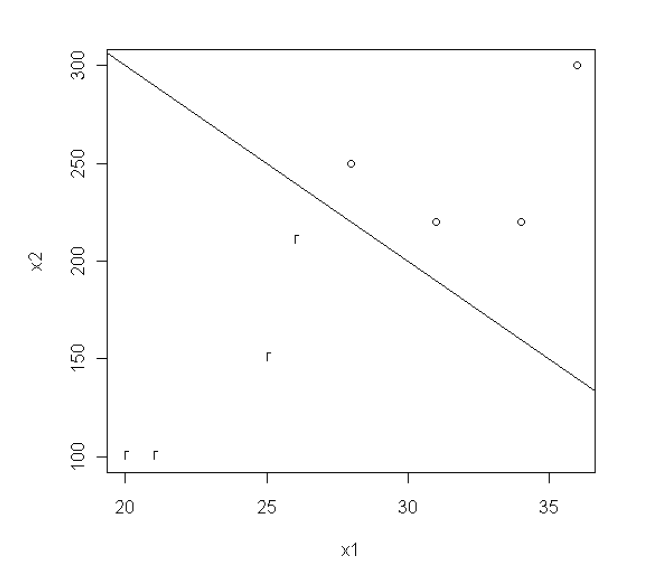
<Figure 7.5.3> Linearly separable data.
If we find the solution to the quadratic programming of the linear support vector, the classification function is
0.333 \(x_{1}\) + 0.033 \(x_{2}\) - 16.667 = 0 which is the line in <Figure 7.5.3> Therefore, the decision rule
is as follows.
$$ \small
\text{If} \;\; 0.333 x_{1} + 0.033x_{2} - 16.667 \;≥\; 0, \;\; \text{classify}\; '+1' \; \text{group, else}\; '-1' \text{group}.
$$
B. Linearly not separable case
<Figure 7.5.4> shows a case where separating the two groups by a straight line is impossible.
In this case, we can create a similar optimization problem by introducing a slack variable to
the classification equation for the case where linear separation is possible. That is,
by subtracting the slack variable \(\xi\) which is positive from the right side of the ≥ inequality in the classification equation,
adding the slack variable \(\xi\) from the right side of the ≤ inequality, and then finding
the hyperplane that minimizes the slack variable. The classification equation minimizes
misclassification.
$$
\array
{ if \;\; \boldsymbol w \;\cdot\; \boldsymbol x \;+\; w_{0} \;≥\; 1 - \xi, \;\;\; y = 1 \cr
\;\;\;\;if \;\; \boldsymbol w \;\cdot\; \boldsymbol x \;+\; w_{0} \;≤\; -1 + \xi, \;\; y = -1
}
$$
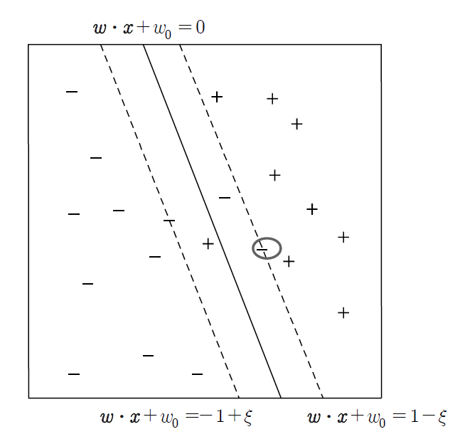
<Figure 7.5.4> Linearly not separable data and a slack variable.
In <Figure 7.5.4>, the slack variable \(\xi\) means that the hyperplane
(\( \boldsymbol w \;\cdot\; \boldsymbol x \;+\; w_{0} = -1 \)) where linear classification is possible
has moved parallel to the hyperplane \( \boldsymbol w \;\cdot\; \boldsymbol x \;+\; w_{0} = -1 + \xi \)
that can include the data of the - group, which is indicated by a circle. The distance between these two hyperplanes
can be shown to be \(\frac{\xi}{|| \boldsymbol w ||}\), and the nonlinear optimization problem
to minimize misclassification in the case of linearly non-separable is as follows.
$$
\begin{multline}
\shoveleft \qquad \text{Find} \;\; \boldsymbol w, w_{0}, \xi_{i} \;\text{which} \;\; \text{minimize} \frac{|| \boldsymbol w ||^2}{2^2} + C(\sum_{i=1}^{n} \; \xi_{i} )^k \\
\shoveleft \qquad \text{subject to} \\
\shoveleft \qquad y_{i} \;( \boldsymbol w \;\cdot\; \boldsymbol x_{i} \;+\; w_{0}) \;≥\; 1 - \xi_{i}, \;\; i=1,2,...,n
\end{multline}
$$
Here, the function \(C(x)\) is a penalty function that minimizes the slack variable, which means an error,
and \(C(x)\) and \(k\) can be selected arbitrarily by the user. This nonlinear optimization problem can also be solved
by the Lagrangian multiplier method, but the details are beyond the level of this book, so we will omit them.
In this section, we introduce the SVM model for the case of two groups, but it can be extended to the case of
multiple groups.
7.5.2 Nonlinear support vector machine
In the previous section, we studied the method of separating two groups using a linear function,
and if we extend this concept, we can easily understand the nonlinear SVM model. The basic idea is
to nonlinearly transform the coordinate space of data \(\boldsymbol x\) into a new space \(\Phi (\boldsymbol x)\).
At this time, the classification function can take various forms such as a circle, an ellipse, or a curve.
The general optimization model of nonlinear SVM is as follows. M
$$
\begin{multline}
\shoveleft \qquad \text{Find} \;\; \boldsymbol w \;\text{which} \;\; \text{minimize} \frac{|| \boldsymbol w ||^2}{2^2} \\
\shoveleft \qquad \text{subject to} \\
\shoveleft \qquad y_{i} \;( \boldsymbol w \;\cdot\; \Phi(\boldsymbol x_{i}) ) \;≥\; 1 , \;\; i=1,2,...,n
\end{multline}
$$
This nonlinear optimization problem can also be solved using the Lagrangian multiplier method,
but the details are beyond the level of this book, so we will omit them.
Characteristics of the support vector machine model
The SVM model is a model that has been widely used recently and has the following characteristics.
1) The optimization problem for solving the linear SVM model is a minimization problem of a convex function,
and the algorithm for finding the global minimum is well-developed.
2) In cases where linear separation is impossible, the SVM model may have the disadvantage of requiring
the user to determine the penalty function.
7.5.3 R and Python practice - Support vector machine
To use the suport vector machine model using R, we need to install a package called
e1071.
From the main menu of R,
select ‘Package’ => ‘Install package(s)’, and a window called ‘CRAN mirror’ will appear. Here,
select ‘0-Cloud [https]’ and click ‘OK’. Then, when the window called ‘Packages’ appears, select
‘e1071’ and click ‘OK’. 'e1071' is a package for modeling of the support vector machine classification model.
General usage and key arguments of the function are described in the following table.
| svm {e1071} |
Fit support vector machine |
# S3 method for formula,
svm(formula, data = NULL, ..., subset, na.action =na.omit, scale = TRUE)
# S3 method for default
svm(x, y = NULL, scale = TRUE, type = NULL, kernel = "radial", degree = 3, gamma = if (is.vector(x)) 1 else 1 / ncol(x),
coef0 = 0, cost = 1, nu = 0.5, class.weights = NULL, cachesize = 40, tolerance = 0.001, epsilon = 0.1,
shrinking = TRUE, cross = 0, probability = FALSE, fitted = TRUE, ..., subset, na.action = na.omit)
|
| formula |
A formula of the form class ~ x1 + x2 + ... |
| data |
an optional data frame containing the variables in the model. By default the variables are taken from the environment which ‘svm’ is called from. |
| x |
a data matrix, a vector, or a sparse matrix (object of class Matrix provided by the Matrix package, or of class matrix.csr provided by the SparseM package, or of class simple_triplet_matrix provided by the slam package). |
| y |
a response vector with one label for each row/component of x. Can be either a factor (for classification tasks) or a numeric vector (for regression).
|
| scale |
A logical vector indicating the variables to be scaled. If scale is of length 1, the value is recycled as many times as needed. Per default, data are scaled internally (both x and y variables) to zero mean and unit variance. The center and scale values are returned and used for later predictions. |
| type |
svm can be used as a classification machine, as a regression machine, or for novelty detection. Depending of whether y is a factor or not, the default setting for type is C-classification or eps-regression, respectively, but may be overwritten by setting an explicit value.
Valid options are:
C-classification
nu-classification
one-classification (for novelty detection)
eps-regression
nu-regression
|
| kernel |
the kernel used in training and predicting. We might consider changing some of the following parameters, depending on the kernel type.
linear: polynomial: radial basis: sigmoid:
|
| degree |
parameter needed for kernel of type polynomial (default: 3) |
| gamma |
parameter needed for all kernels except linear (default: 1/(data dimension)) |
| coef0 |
parameter needed for kernels of type polynomial and sigmoid (default: 0) |
| cost |
cost of constraints violation (default: 1)---it is the ‘C’-constant of the regularization term in the Lagrange formulation |
| nu |
parameter needed for nu-classification, nu-regression, and one-classification |
| class.weights |
a named vector of weights for the different classes, used for asymmetric class sizes. Not all factor levels have to be supplied (default weight: 1). All components have to be named. Specifying "inverse" will choose the weights inversely proportional to the class distribution. |
| cachesize |
cache memory in MB (default 40) |
| tolerance |
tolerance of termination criterion (default: 0.001) |
| epsilon |
epsilon in the insensitive-loss function (default: 0.1) |
| shrinking |
option whether to use the shrinking-heuristics (default: TRUE) |
| cross |
if a integer value k>0 is specified, a k-fold cross validation on the training data is performed to assess the quality of the model: the accuracy rate for classification and the Mean Squared Error for regression |
| fitted |
logical indicating whether the fitted values should be computed and included in the model or not (default: TRUE) |
| probability |
logical indicating whether the model should allow for probability predictions. |
| subset |
An index vector specifying the cases to be used in the training sample. (NOTE: If given, this argument must be named.) |
| na.action |
A function to specify the action to be taken if NAs are found. The default action is na.omit, which leads to rejection of cases with missing values on any required variable. An alternative is na.fail, which causes an error if NA cases are found. (NOTE: If given, this argument must be named.) |
An example of R commands for the single-layer neural network model using the data as in Example 7.4.2 is as follows.
| install.packages('e1071') |
| library(e1071) |
| svmdata <- read.csv('http://estat.me/estat/Example/DataScience/Svmdata.csv', header=T, as.is=FALSE) |
| attach(svmdata) |
svmdata
x1 x2 y
1 25 150 -1
2 34 220 1
3 26 210 -1
4 28 250 1
5 21 100 -1
6 31 220 1
7 36 300 1
8 20 100 -1
|
# create a training data using the 8 data.
train <- svmdata[1:8,] |
# create a testing data using the same 8 data
test <- svmdata[1:8,] |
train.svm = svm(y~x1+x2,type="C-classification", data=train)
|
train.svm
Call:
svm(formula = y ~ x1 + x2, data = train, type = "C-classification")
Parameters:
SVM-Type: C-classification
SVM-Kernel: radial
cost: 1
Number of Support Vectors: 6
|
The R command to reclassify the entire 8 data into groups using the above model is as follows.
Classifying the test data shows that all data are classified correctly.
svmpred = predict(train.svm,test)
> svmpred
1 2 3 4 5 6 7 8
-1 1 -1 1 -1 1 1 -1
Levels: -1 1
|
| z = table(svmpred,y)
|
z
y
svmpred -1 1
-1 4 0
1 0 4
|
The R command to draw a scatter plot of x1, x2, labeled with the values of y, and
a classification line 500 - 10 x1 on the scatter plot is as follows.
| plot(x1,x2,pch=y) |
abline(500,-10)
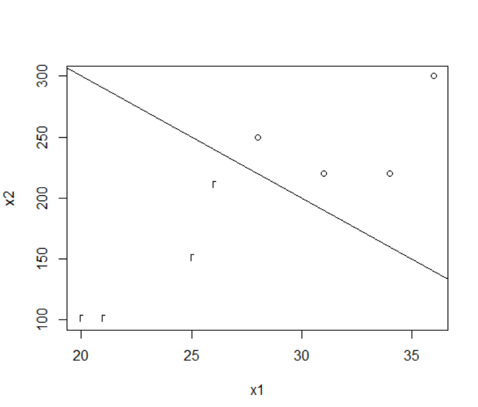
|
Python practice
[Colab]
# Import required libraries
import pandas as pd
import numpy as np
from sklearn.svm import SVC
import matplotlib.pyplot as plt
# Load data
svmdata = pd.read_csv('https://raw.githubusercontent.com/ogut77/DataScience/refs/heads/main/svmdata.csv')
# Create training and testing data using the first 8 rows
train = svmdata.iloc[:8]
test = svmdata.iloc[:8]
# Prepare features and target for training
X_train = train[['x1', 'x2']]
y_train = train['y']
X_test = test[['x1', 'x2']]
y_test = test['y']
# Train SVM model (C-classification)
svm_model = SVC(kernel='linear') # R's svm with type="C-classification" defaults to linear kernel
svm_model.fit(X_train, y_train)
# Print model details
print("Support Vectors:", svm_model.support_vectors_)
print("Number of Support Vectors:", svm_model.n_support_)
# Predict on test data
svm_pred = svm_model.predict(X_test)
print("Predictions:", svm_pred)
# Create confusion matrix
z = pd.crosstab(svm_pred, y_test, rownames=['Predicted'], colnames=['Actual'])
print("Confusion Matrix:\n", z)
# Plot data points with class labels
plt.scatter(X_train['x1'], X_train['x2'], c=y_train, cmap='bwr', marker='o')
plt.xlabel('x1')
plt.ylabel('x2')
# Plot the line abline(500, -10), which in Python is y = 500 - 10x
x = np.linspace(min(X_train['x1']), max(X_train['x1']), 100)
y = 500 - 10 * x
plt.plot(x, y, 'k-')
plt.show()
Support Vectors: [[ 26. 210.]
[ 31. 220.]]
Number of Support Vectors: [1 1]
Predictions: [-1 1 -1 1 -1 1 1 -1]
Confusion Matrix:
Actual -1 1
Predicted
-1 4 0
1 0 4
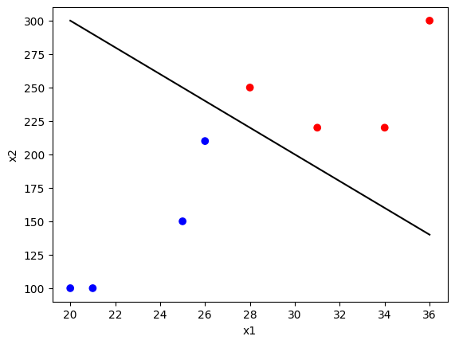
|
7.6 Ensemble model
The classification models studied so far have used a single classification function to predict the group of data
whose affiliation is unknown. This section introduces an
ensemble model that combines the results
of multiple classification models to increase classification accuracy. Let us call a classification model
established using training data a classifier. The ensemble model is a method that creates multiple classifiers
from the training data, applies each classifier to classify the group when classifying data whose group affiliation
is unknown, and then determines the final group by a majority vote of the resulting groups.
The ensemble model can obtain better classification results than a single classifier. For example, suppose
five classifiers classify two groups, and each has a misclassification rate of 5%.
If the five classifiers are independent models, the ensemble model will misclassify
if more than half of the classifiers are misclassified. In other words, the misclassification rate
\(e_{ensemble}\) of the ensemble model is as follows.
$$
e_{ensemble} \;=\; \sum_{i=3}^{5} \; {}_{5} C_{i} \; (0.05)^i (1-0.05)^{5-i} \;=\; 0.0001
$$
Therefore, the misclassification rate of the ensemble model is smaller than that of each classifier.
For the ensemble model to have better classification results than each classifier, each classifier
must be independent, and the misclassification rate must be at least less than 50%. In practice,
it is often difficult to say that each classifier is completely independent, but even in such cases,
the classification results of the ensemble model are known to be good.
Each classifier used in the ensemble model can be any classification model. However, while applying one model,
we can create multiple classifiers by adjusting the data, adjusting the number of variables, or adjusting
the group name.
A. Adjust the number of data
This method creates multiple training data sets from the data using an appropriate sampling method,
and one classifier from each data set is created. A bagging method described
in Section 7.6.1 and a boosting method described in Section 7.6.2 are representative methods
for adjusting data and ensembling them.
B. Control the number of variables
This method creates training data by selecting a subset of variables from the entire set of variables.
Experts can randomly extract or select the subset of variables. It is known to be effective
when there are many unnecessary variables, and an ensemble classification method called a random forest
is introduced in Section 7.6.3.
C. Control group names
If there are many types of groups, we can classify them by grouping them into a small number of groups,
or we can apply an ensemble model by creating a classifier that only classifies whether or not
they belong to each group.
D. Adjust classification model assumptions
A classification model can be divided into several different classification models by changing the
assumptions about parameters or algorithms, we can synthesize them into an ensemble model.
For example, in a neural network model, we can create different classifiers by changing the assumptions
about the network shape or the initial weight coefficients. In a decision tree model, we can create different classifiers
by changing the criteria for selecting branching variables or tree expansion criteria.
7.6.1 Bagging
Bagging is an abbreviation for bootstrap aggregating that generates a classifier for each sample
using simple random sampling with replacement repeatedly from the training data
and then ensembling the results. Since the repeated sampling
with replacement is used, same data can be extracted multiple times in a sample, and some data
may not be extracted in all samples. When there are \(n\) data, if \(n\) samples are repeatedly extracted
by simple random sampling with replacement, the probability that each data will be extracted again is
\(1-(1 - \frac{1}{n})^n\). If \(n\) is sufficiently large, this probability converges to \(1 - \frac{1}{e}\),
which is approximately 0.632. The general bagging algorithm is as follows.
[
Bagging algorithm]
| Step 1 |
Let \(R\) be the number of bootstrap samples, and \(n\) be the sample size |
| Step 2 |
for k = 1 to R do |
| Step 3 |
\(\qquad\)Generate bootstrap samples \(D_{k}\) of size \(n\) |
| Step 4 |
\(\qquad\)Create classifier \(C_{k}\) using bootstrap samples \(D_{k}\) |
| Step 5 |
end for |
| Step 6 |
Classify an unknown data \(\boldsymbol x\) into the majority vote of all classifiers, that is,
$$C^{*} (\boldsymbol x ) = {argmax}_{y} \; \sum_{k=1}^{R} \; I(C_{k} (\boldsymbol x) = y ) $$
|
Example 7.6.1 (Bagging)
A survey of 10 people who visited a store showed monthly income \(x\) and
purchasing status \(y\) (purchasers have a value of 1 and non-purchasers have a value of -1), as shown in Table 7.6.1.
We want to use a simple decision tree classifier such that
‘If \(x ≤ c\), classify \(x\) into purchaser group 1, otherwise classify into non-purchaser group -1’.
This is called a
decision stump, and \(c\) is determined so that the entropy is minimized
(see Section 6.2). Classify this data using the bagging method.
| Table 7.6.1 Ten customer data with income \(x\) and purchase status \(y\) |
| \(x\) | 100 | 120 | 160 | 180 | 186 | 190 | 210 | 250 | 270 | 300 |
| \(y\) | 1 | 1 | 1 | -1 | -1 | -1 | -1 | 1 | 1 | 1 |
Answer
In the above data, the branching that minimizes entropy is \(c\) = 170 or 200 (see Section 6.2).
In both cases, the classification accuracy is 70%. Table 7.6.2 shows ten bootstrap samples and
their classifiers that minimize entropy for applying the bagging method.
| Table 7.6.2 Ten bootstrap samples and each classifier |
| number |
Bootstrap sample |
Classifier |
| Sample 1 |
\(x\) |
100 | 120 | 120 | 160 | 180 |
180 | 186 | 190 | 270 | 270 |
If \(x ≤ 170\), then \(y\) = 1,
else \(y\) = -1 |
| \(y\) |
1 | 1 | 1 | 1 | -1 |
-1 | -1 | -1 | 1 | 1 |
| Sample 2 |
\(x\) |
100 | 120 | 160 | 180 | 186 |
250 | 270 | 300 | 300 | 300 |
If \(x ≤ 300\), then \(y\) = 1,
else \(y\) = -1 |
| \(y\) |
1 | 1 | 1 | -1 | -1 |
1 | 1 | 1 | 1 | 1 |
| Sample 3 |
\(x\) |
100 | 120 | 160 | 180 | 180 |
186 | 210 | 210 | 250 | 270 |
If \(x ≤ 170\), then \(y\) = 1,
else \(y\) = -1 |
| \(y\) |
1 | 1 | 1 | -1 | -1 |
-1 | -1 | -1 | 1 | 1 |
| Sample 4 |
\(x\) |
100 | 100 | 120 | 180 | 180 |
186 | 186 | 210 | 250 | 270 |
If \(x ≤ 150\), then \(y\) = 1,
else \(y\) = -1 |
| \(y\) |
1 | 1 | 1 | -1 | -1 |
-1 | -1 | -1 | 1 | 1 |
| Sample 5 |
\(x\) |
100 | 100 | 120 | 186 | 190 |
190 | 190 | 300 | 300 | 300 |
If \(x ≤ 153\), then \(y\) = 1,
else \(y\) = -1 |
| \(y\) |
1 | 1 | 1 | -1 | -1 |
-1 | -1 | 1 | 1 | 1 |
| Sample 6 |
\(x\) |
120 | 180 | 186 | 190 | 210 |
210 | 210 | 250 | 270 | 300 |
If \(x ≤ 230\), then \(y\) = -1,
else \(y\) = 1 |
| \(y\) |
1 | -1 | -1 | -1 | -1 |
-1 | -1 | 1 | 1 | 1 |
| Sample 7 |
\(x\) |
100 | 180 | 180 | 190 | 210 |
250 | 270 | 270 | 270 | 300 |
If \(x ≤ 230\), then \(y\) = -1,
else \(y\) = 1 |
| \(y\) |
1 | -1 | -1 | -1 | -1 |
1 | 1 | 1 | 1 | 1 |
| Sample 8 |
\(x\) |
100 | 120 | 186 | 186 | 186 |
210 | 210 | 250 | 270 | 300 |
If \(x ≤ 230\), then \(y\) = -1,
else \(y\) = 1 |
| \(y\) |
1 | 1 | -1 | -1 | -1 |
-1 | -1 | 1 | 1 | 1 |
| Sample 9 |
\(x\) |
100 | 160 | 180 | 180 | 190 |
210 | 210 | 250 | 300 | 300 |
If \(x ≤ 230\), then \(y\) = -1,
else \(y\) = 1 |
| \(y\) |
1 | 1 | -1 | -1 | -1 |
-1 | -1 | 1 | 1 | 1 |
| Sample 10 |
\(x\) |
100 | 100 | 100 | 100 | 160 |
160 | 250 | 250 | 270 | 270 |
If \(x ≤ 50\), then \(y\) = -1,
else \(y\) = 1 |
| \(y\) |
1 | 1 | 1 | 1 | 1 |
1 | 1 | 1 | 1 | 1 |
Table 7.6.3 shows the final classification results by majority vote after classifying the original 10 data by classifiers obtained from each sample.
we can obtain the final classification results using a majority vote by adding the classified group
of each classifier and examining the sign. The ensemble classification results by bagging accurately classify all data.
| Table 7.6.3 Classification results of each data by bagging 10 classifier |
| Classifier of each sample |
Income data \(x\) |
| 100 |
120 |
160 |
180 |
186 |
190 |
210 |
250 |
270 |
300 |
| Classifier 1 |
1 | 1 | 1 | -1 | -1 |
-1 | -1 | -1 | -1 | -1 |
| Classifier 2 |
1 | 1 | 1 | 1 | 1 |
1 | 1 | 1 | 1 | 1 |
| Classifier 3 |
1 | 1 | 1 | -1 | -1 |
-1 | -1 | -1 | -1 | -1 |
| Classifier 4 |
1 | 1 | 1 | -1 | -1 |
-1 | -1 | -1 | -1 | -1 |
| Classifier 5 |
1 | 1 | 1 | -1 | -1 |
-1 | -1 | -1 | -1 | -1 |
| Classifier 6 |
-1 | -1 | -1 | -1 | -1 |
-1 | -1 | 1 | 1 | 1 |
| Classifier 7 |
-1 | -1 | -1 | -1 | -1 |
-1 | -1 | 1 | 1 | 1 |
| Classifier 8 |
-1 | -1 | -1 | -1 | -1 |
-1 | -1 | 1 | 1 | 1 |
| Classifier 9 |
-1 | -1 | -1 | -1 | -1 |
-1 | -1 | 1 | 1 | 1 |
| Classifier 10 |
1 | 1 | 1 | 1 | 1 |
1 | 1 | 1 | 1 | 1 |
| Total |
2 |
2 |
2 |
-6 |
-6 |
-6 |
-6 |
2 |
2 |
2 |
| Sign of Total |
1 |
1 |
1 |
-1 |
-1 |
-1 |
-1 |
1 |
1 |
1 |
| Actual group \(y\) |
1 |
1 |
1 |
-1 |
-1 |
-1 |
-1 |
1 |
1 |
1 |
The bagging ensemble method can reduce misclassification by reducing the variance of each classifier.
The performance of bagging depends on the stability of each classifier. If each classifier is not stable,
bagging reduces the error related to the random variability in the training data. Since the bagging ensemble method
has the same probability of extracting each data, it does not focus on classifying abnormal data such as extreme values.
Therefore, problems such as model overfitting do not occur even in noisy data.
7.6.2 R and Python practice - Bagging
To use the bagging ensemble model using R, we need to install a package called
adabag.
From the main menu of R,
select ‘Package’ => ‘Install package(s)’, and a window called ‘CRAN mirror’ will appear. Here,
select ‘0-Cloud [https]’ and click ‘OK’. Then, when the window called ‘Packages’ appears, select
‘adabag’ and click ‘OK’. 'adabag' is a package for modeling of the bagging and adaboosting ensemble model.
General usage and key arguments of the function are described in the following table.
| bagging {adabag} |
Applies the Bagging algorithm to a data set
Fits the Bagging algorithm proposed by Breiman in 1996 using classification trees as single classifiers.
|
|
bagging(formula, data, mfinal = 100, control, par=FALSE,...)
|
| formula |
a formula, as in the lm function. |
| data |
a data frame in which to interpret the variables named in the formula |
| mfinal |
an integer, the number of iterations for which boosting is run or the number of trees to use. Defaults to mfinal=100 iterations. |
| control |
options that control details of the rpart algorithm. See rpart.control for more details. |
| par |
if TRUE, the cross validation process is runned in parallel. If FALSE (by default), the function runs without parallelization. |
| Details: Unlike boosting, individual classifiers are independent among them in bagging |
| Value: An object of class bagging, which is a list with the following components: |
| formula |
the formula used. |
| trees |
the trees grown along the iterations. |
| votes |
a matrix describing, for each observation, the number of trees that assigned it to each class. |
| prob |
a matrix describing, for each observation, the posterior probability or degree of support of each class. These probabilities are calculated using the proportion of votes in the final ensemble. |
| class |
the class predicted by the ensemble classifier. |
| samples |
the bootstrap samples used along the iterations. |
| importance |
returns the relative importance of each variable in the classification task. This measure takes into account the gain of the Gini index given by a variable in each tree. |
An example of R commands for the bagging ensemble model using the iris data stored in R is as follows.
| install.packages('adbag') |
| library(adabag) |
| data(iris) |
# mfinal is an integer which is the number of iterations for which boosting is run
iris.bagging <- bagging(Species~., data=iris, mfinal = 10)) |
# list the importance of variable in the classification
iris.bagging$importance
Petal.Length Petal.Width Sepal.Length Sepal.Width
79.46481 20.53519 0.00000 0.00000
|
# list the trees grown along the iterations.
iris.bagging$trees
[[1]]
n= 150
node), split, n, loss, yval, (yprob)
* denotes terminal node
1) root 150 94 virginica (0.32666667 0.30000000 0.37333333)
2) Petal.Length< 2.45 49 0 setosa (1.00000000 0.00000000 0.00000000) *
3) Petal.Length>=2.45 101 45 virginica (0.00000000 0.44554455 0.55445545)
6) Petal.Width< 1.75 49 4 versicolor (0.00000000 0.91836735 0.08163265)
12) Petal.Length< 4.95 42 0 versicolor (0.00000000 1.00000000 0.00000000) *
13) Petal.Length>=4.95 7 3 virginica (0.00000000 0.42857143 0.57142857) *
7) Petal.Width>=1.75 52 0 virginica (0.00000000 0.00000000 1.00000000) *
...
...
...
[[10]]
n= 150
node), split, n, loss, yval, (yprob)
* denotes terminal node
1) root 150 92 setosa (0.38666667 0.34666667 0.26666667)
2) Petal.Length< 2.6 58 0 setosa (1.00000000 0.00000000 0.00000000) *
3) Petal.Length>=2.6 92 40 versicolor (0.00000000 0.56521739 0.43478261)
6) Petal.Length< 4.75 46 1 versicolor (0.00000000 0.97826087 0.02173913) *
7) Petal.Length>=4.75 46 7 virginica (0.00000000 0.15217391 0.84782609) *
|
# plot the decision tree after iteration 10 data
plot(iris.bagging$trees[[10]]) |
text(iris.bagging$trees[[10]])
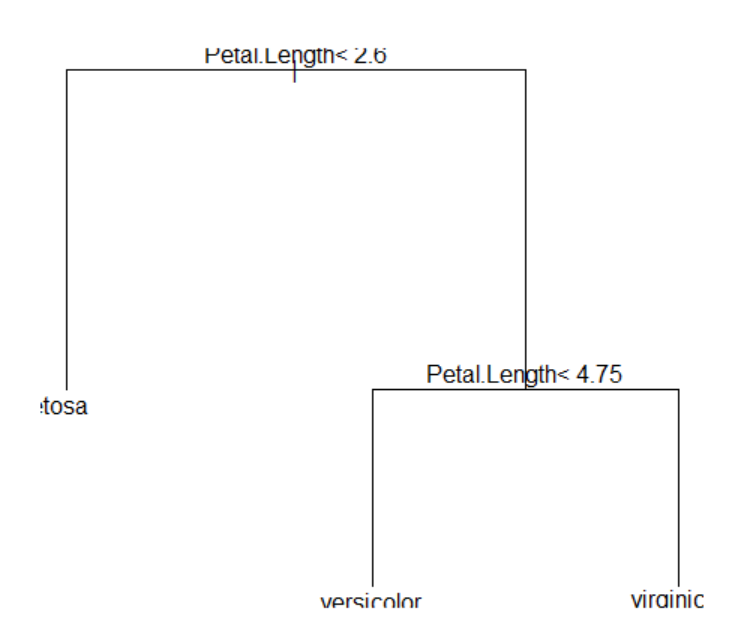
|
The R command to reclassify the entire iris data using the bagging model is as follows.
# classify the iris data using the bagging model
baggingpred <- predict(iris.bagging, newdata=iris)
|
table(baggingpred$class, iris[,5])
setosa versicolor virginica
setosa 50 0 0
versicolor 0 47 1
virginica 0 3 49
|
# calculate the misclassification error
baggingtb <- table(baggingpred$class, iris[,5]) |
| baggingerror.rpart <- 1-(sum(diag(baggingtb))/sum(baggingtb)) |
# misclassification error is 2.67%
baggingerror.rpart
[1] 0.02666667
|
Python practice
[Colab]
# Import required libraries
import pandas as pd
import numpy as np
from sklearn.ensemble import AdaBoostClassifier
from sklearn.tree import DecisionTreeClassifier, plot_tree
from sklearn.metrics import confusion_matrix
import matplotlib.pyplot as plt
from sklearn.datasets import load_iris
# Load iris dataset
iris = load_iris()
iris_df = pd.DataFrame(data=iris.data, columns=iris.feature_names)
iris_df['Species'] = iris.target
species_map = {0: 'setosa', 1: 'versicolor', 2: 'virginica'}
iris_df['Species'] = iris_df['Species'].map(species_map)
# Bagging with decision trees (mfinal=10 iterations)
bagging_model = AdaBoostClassifier(n_estimators=10, random_state=0)
X = iris_df.drop('Species', axis=1)
y = iris_df['Species']
bagging_model.fit(X, y)
# Feature importance
importance = bagging_model.feature_importances_
feature_names = iris.feature_names
importance_df = pd.Series(importance, index=feature_names)
print("Feature Importance:\n", importance_df)
# List of trees (equivalent to iris.bagging$trees)
trees = bagging_model.estimators_
print("Number of trees:", len(trees))
# Plot the decision tree for the 10th iteration
plt.figure(figsize=(10, 6))
plot_tree(trees[9], feature_names=feature_names, class_names=list(species_map.values()), filled=True)
plt.title("Decision Tree for Iteration 10")
plt.show()
# Predict on the iris dataset
bagging_pred = bagging_model.predict(X)
# Confusion matrix
conf_matrix = confusion_matrix(y, bagging_pred, labels=['setosa', 'versicolor', 'virginica'])
conf_matrix_df = pd.DataFrame(conf_matrix, index=['setosa', 'versicolor', 'virginica'],
columns=['setosa', 'versicolor', 'virginica'])
print("Confusion Matrix:\n", conf_matrix_df)
# Calculate misclassification error
bagging_error = 1 - (np.diag(conf_matrix).sum() / conf_matrix.sum())
print("Misclassification Error:", bagging_error)
print("Misclassification Error (%):", bagging_error * 100, "%")
Feature Importance:
sepal length (cm) 0.000000
sepal width (cm) 0.000000
petal length (cm) 0.599859
petal width (cm) 0.400141
dtype: float64
Number of trees: 10
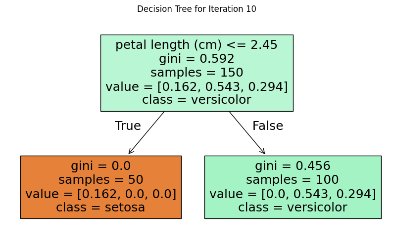
Confusion Matrix:
setosa versicolor virginica
setosa 50 0 0
versicolor 0 47 3
virginica 0 2 48
Misclassification Error: 0.033333333333333326
Misclassification Error (%): 3.3333333333333326 %
|
7.6.3 Boosting
In bagging, data is resampled with the same probability of being selected.
Boosting is a method of extracting data
by weighting data depending on whether it is classified correctly or not in the previous stage, so they are more likely
to be selected as samples. In boosting, after samples are extracted and a classifier is made,
the classification results are used to modify the probability of each data being selected in
the next bootstrap sampling.
When there are \(n\) training data, the boosting method first gives each data an equal probability of being selected
as \(\frac{1}{n}\), just like bagging, and then extracts \(n\) bootstrap data with replacement.
After creating a classifier using this bootstrap data, the original training data is classified by this classifier,
either as a correct classification or a misclassification. If the data is misclassified, the probability of this data
being selected is increased, so it is more likely to be selected in the next stage,
and if the data is correctly classified, the probability of being selected in the next stage is decreased.
Since the data that was not extracted is also likely to be misclassified, the probability of being selected
is also increased. If this method is used repeatedly, data that is continuously misclassified will be more focused.
Recently, many types of research on boosting algorithms have been studied, and the algorithms differ depending on
(1) ‘How do we modify the probability of extracting data in each boosting round?’ and
(2) ‘How do we synthesize the classifiers determined in each boosting round to make the final classification?’.
We introduce the widely used adaptive boosting algorithm called AdaBoosting.
AdaBoosting algorithm
Let \( D = \{(\boldsymbol x_{1}, y_{1}), (\boldsymbol x_{2}, y_{2}), ... , (\boldsymbol x_{n}, y_{n}) \}\) be
the set of training data and the probability of each data being selected is \(p_{1}, p_{2}, ... , p_{n}\).
When selecting the bootstrap sample for the first time, the probability of extracting each data is made the same,
that is, \(p_{i} = \frac{1}{n} , i=1,2,...,n\). Let the bootstrap samples be selected \(R\) times and
the classifier obtained from each bootstrap sample be \(C_{1}, C_{2}, ... , C_{R}\).
The Adaboosting algorithm calculates the misclassification rate \(\epsilon_{k}\) of each classifier \(C_{k}\) as follows.
$$
\epsilon_{k} \;=\; \frac{1}{n} \; \left [ \; \sum_{i=1}^{n} \; p_{i} \; I \{ C_{k} (\boldsymbol x_{i}) \;\ne\; y_{i} \} \right ], \;\; k=1,2,...,R
$$
Here, \(C_{k} (\boldsymbol x_{i})\) is the result of the classifier \(C_{k}\) estimating the group of data
\(\boldsymbol x_{i} \), and \(I \{ C_{k} (\boldsymbol x_{i}) \;\ne\; y_{i} \}\) has a value of 1
when the classifier \(C_{k}\) fails to classify the data \(\boldsymbol x_{i} \) into the original group \(y_{i}\),
and 0 otherwise. In other words, \(\epsilon_{k}\) is the error rate that weights the probability of selecting the data
for each misclassification of data by the classifier \(C_{k}\). The importance \(\alpha_{k}\) of the classifier
\(C_{k}\) is determined as follows.
$$
\alpha_{k} \;=\; \frac{1}{2} \; ln \; \frac{1- \epsilon_{k}}{\epsilon_{k}}, \;\; k=1,2,...,R
$$
If the misclassification rate \(\epsilon_{k}\) is close to 0, the importance \(\alpha_{k}\) value increases,
and conversely, if \(\epsilon_{k}\) is close to 1, the \(\alpha_{k}\) value decreases. The importance \(\alpha_{k}\)
of the classifier \(C_{k}\) is used to adjust the probability of data being selected. If \(p_{i}^{(k)}, i=1,2, ... , n\)
is the probability when \(k\)th bootstrap sample is selected, the adjusted probability for selecting (\(k+1\))th
bootstrap sample is as follows.
$$
\begin{align}
p_{i}^{(k+1)} \;&=\; \frac {p_{i}^{(k)}}{Z_{k}} \times e^{-\alpha_{k}} \quad if \; C_{k} (\boldsymbol x_{i}) \;=\; y_{i} \\
\;&=\; \frac {p_{i}^{(k)}}{Z_{k}} \times e^{\alpha_{k}} \quad if \; C_{k} (\boldsymbol x_{i}) \;\ne\; y_{i} \\
\end{align}
$$
This equation means that if the data \(\boldsymbol x_{i} \) is misclassified, then this data will be used
for the next bootstrap sampling, and it increases the probability of being selected so that it is more likely
to be extracted, and if the data is correctly classified, it decreases the probability of being selected
in the next bootstrap sampling. Here, \(Z_{k}\) is a constant that makes the sum of
\(p_{1}^{(k+1)}, p_{2}^{(k+1)}, ... , p_{n}^{(k+1)}\) becomes one as follows.
$$
\sum_{i=1}^{n} \; p_{i}^{(k+1)} \;=\; 1
$$
If the misclassification rate exceeds 50% during the boosting round, the probability of each data being selected
is returned to \(p_{i} = \frac{1}{n} \) and selection with replacement is performed.
The method of synthesizing the classification results of the \(R\) classifiers generated for the data \(\boldsymbol x \)
of which the group is unknown does not use majority voting, but uses the result of weighting each classification result
by the importance \(\alpha_{k}\).
$$
C^{*} (\boldsymbol x ) = {argmax}_{v} \; \sum_{k=1}^{R} \; \alpha_{k} \; I(C_{k} (\boldsymbol x) = v )
$$
The Adaboosting algorithm that synthesizes the above explanations is as follows.
[
AdaBoosting algorithm]
| Step 1 |
Let \( D = \{(\boldsymbol x_{1}, y_{1}), (\boldsymbol x_{2}, y_{2}), ... , (\boldsymbol x_{n}, y_{n}) \}\) be the set of training data |
| Step 2 |
Let the initial probability being selected be \( p_{i}^{(1)} = \frac{1}{n}, i=1,2, ... , n\). |
| Step 3 |
Let \(R\) be the number of bootstrap samples. |
| Step 4 |
for k = 1 to Rdo |
| Step 5 |
\(\qquad\)Generate bootstrap samples \(D_{k}\) of size \(n\) using \( p_{i}^{(k)}\) |
| Step 6 |
\(\qquad\)Create classifier \(C_{k}\) using bootstrap samples \(D_{k}\) |
| Step 7 |
\(\qquad\)Apply \(C_{k}\) to each data of \(D\) whether it classifies correctly or not |
| Step 8 |
\(\qquad\)calculates the misclassification rate
\(
\epsilon_{k} \;=\; \frac{1}{n} \; \left [ \; \sum_{i=1}^{n} \; p_{i} \; I \{ C_{k} (\boldsymbol x_{i}) \;\ne\; y_{i} \} \right ]
\)
|
| Step 9 |
\(\qquad\)If \(\epsilon_{k} > 0.5\) then |
| Step 10 |
\(\qquad \quad\)Set again initial probability \( p_{i}^{(1)} = \frac{1}{n}, i=1,2, ... , n\) |
| Step 11 |
\(\qquad \quad\)Go back to Step 4 |
| Step 12 |
\(\qquad\)end if |
| Step 13 |
\(\qquad\)\(\alpha_{k} \;=\; \frac{1}{2} \; ln \; \frac{1- \epsilon_{k}}{\epsilon_{k}}\) |
| Step 14 |
\(\qquad\)
\(
\begin{align}
p_{i}^{(k+1)} \;&=\; \frac {p_{i}^{(k)}}{Z_{k}} \times e^{-\alpha_{k}} \quad if \; C_{k} (\boldsymbol x_{i}) \;=\; y_{i} \\
\;&=\; \frac {p_{i}^{(k)}}{Z_{k}} \times e^{\alpha_{k}} \quad if \; C_{k} (\boldsymbol x_{i}) \;\ne\; y_{i} \\
\end{align}
\)
\(\qquad Z\) is a constant that makes the sum of probability becomes 1.
|
| Step 15 |
end for |
| Step 16 |
Classify an unknown data \(\boldsymbol x\) into the weighted majority vote of each classifier,
\(
C^{*} (\boldsymbol x ) = {argmax}_{v} \; \sum_{k=1}^{R} \; \alpha_{k} \; I(C_{k} (\boldsymbol x) = v )
\)
|
Example 7.6.2 (AdaBoosting)
Classify the data in Table 7.6.1 of Example 7.6.1 below using the Adaboosting ensemble method. The classifier in each round uses
a minimum entropy decision stump.
| Table 7.6.1 10 customer data with income \(x\) and purchase status \(y\) |
| \(x\) | 100 | 120 | 160 | 180 | 186 | 190 | 210 | 250 | 270 | 300 |
| \(y\) | 1 | 1 | 1 | -1 | -1 | -1 | -1 | 1 | 1 | 1 |
Answer
Since the number of data is \(n\) = 10, at first, as in bagging, the probability of each data being selected is given
equally as \(\frac{1}{10}\) = 0.1, and then 10 new bootstrap sampling data are extracted with replacement.
Assume that the data extracted by this method are as follows, the minimum entropy classifier \(C_{1}\) is as shown
in Table 7.6.4.
| Table 7.6.4 (Sample 1) 10 bootstrap samples for AdaBoosting and classifier \(C_{1}\) |
| number |
Bootstrap sample |
Classifier \(C_{1}\) |
| Sample 1 |
\(x\) |
100 |
180 |
186 |
190 |
190 |
210 |
216 |
210 |
250 |
300 |
If \(x ≤ 230\), then \(y\) = -1,
else \(y\) = 1 |
| \(y\) |
1 | -1 | -1 | -1 | -1 |
-1 | -1 | -1 | 1 | 1 |
The classification results of the original data using the classifier \(C_{1}\) and the process of updating the new probability of selection
are as in Table 7.6.5.
| Table 7.6.5 Process of updating the new probability of selection using \(C_{1}\) |
| Selction probability \(p_{i}^{(1)}\) |
0.1 | 0.1 | 0.1 | 0.1 | 0.1 |
0.1 | 0.1 | 0.1 | 0.1 | 0.1 |
| \(x_{i}\) |
100 | 120 | 160 | 180 | 186 |
190 | 210 | 250 | 270 | 300 |
| \(y_{i}\) |
1 | 1 | 1 | -1 | -1 |
-1 | -1 | 1 | 1 | 1 |
| Classification by \(C_{1} (x_{i})\) |
-1 | -1 | -1 | -1 | -1 |
-1 | -1 | 1 | 1 | 1 |
| \(I(C_{1} (x_{i}) \ne y_{i} )\) |
1 | 1 | 1 | 0 | 0 |
0 | 0 | 0 | 0 | 0 |
| \(p_{i}^{(1)}\; I(C_{1} (x_{i}) \ne y_{i} )\) |
0.1 | 0.1 | 0.1 | 0 | 0 |
0 | 0 | 0 | 0 | 0 |
|
\(\epsilon_{1} = 0.03\), \(\quad \alpha_{1} \;=\; \frac{1}{2} \; ln \; \frac{1- \epsilon_{1}}{\epsilon_{1}}\) = 1.738
|
|
\(
\begin{align}
e^{-\alpha_{1}} \quad if \; C_{1} (\boldsymbol x_{i}) \;=\; y_{i} \\
e^{\alpha_{1}} \; \quad if \; C_{1} (\boldsymbol x_{i}) \;\ne\; y_{i} \\
\end{align}
\)
|
5.686 | 5.686 | 5.686 | 0.176 | 0.176 |
0.176 | 0.176 | 0.176 | 0.176 | 0.176 |
| \(p_{i}^{(1)} \; \times \) above row |
0.569 | 0.569 | 0.569 | 0.018 | 0.018 |
0.018 | 0.018 | 0.018 | 0.018 | 0.018 |
|
\(Z_{1} = 1.829\)
|
| New selction probability \(p_{i}^{(2)}\) |
0.311 | 0.311 | 0.311 | 0.010 | 0.010 |
0.010 | 0.010 | 0.010 | 0.010 | 0.010 |
The 10 new bootstrap sampling data extracted with replacement using the new selection probability and the classifier \(C_{2}\) at this time
are as shown in Table 7.6.5.
| Table 7.6.5 (Sample 2) 10 bootstrap samples for AdaBoosting and classifier \(C_{2}\) |
| number |
Bootstrap sample |
Classifier \(C_{2}\) |
| Sample 2 |
\(x\) |
100 |
120 |
120 |
120 |
120 |
120 |
160 |
160 |
160 |
160 |
If \(x ≤ 50\), then \(y\) = -1,
else \(y\) = 1 |
| \(y\) |
1 | 1 | 1 | 1 | 1 |
1 | 1 | 1 | 1 | 1 |
The classification results of the original data using the classifier \(C_{2}\) and the process of updating the new probability of selection
are as in Table 7.6.6.
| Table 7.6.6 Process of updating the new probability of selection using \(C_{2}\) |
| Selction probability \(p_{i}^{(2)}\) |
0.311 | 0.311 | 0.311 | 0.010 | 0.010 |
0.010 | 0.010 | 0.010 | 0.010 | 0.010 |
| \(x_{i}\) |
100 | 120 | 160 | 180 | 186 |
190 | 210 | 250 | 270 | 300 |
| \(y_{i}\) |
1 | 1 | 1 | -1 | -1 |
-1 | -1 | 1 | 1 | 1 |
| Classification by \(C_{2} (x_{i})\) |
1 | 1 | 1 | 1 | 1 |
1 | 1 | 1 | 1 | 1 |
| \(I(C_{2} (x_{i}) \ne y_{i} )\) |
0 | 0 | 0 | 1 | 1 |
1 | 1 | 0 | 0 | 0 |
| \(p_{i}^{(2)}\; I(C_{2} (x_{i}) \ne y_{i} )\) |
0 | 0 | 0 | 0.010 | 0.010 |
0.010 | 0.010 | 0 | 0 | 0 |
|
\(\epsilon_{2} = 0.004\), \(\quad \alpha_{2} \;=\; \frac{1}{2} \; ln \; \frac{1- \epsilon_{2}}{\epsilon_{2}}\) = 2.758
|
|
\(
\begin{align}
e^{-\alpha_{2}} \quad if \; C_{2} (\boldsymbol x_{i}) \;=\; y_{i} \\
e^{\alpha_{2}} \; \quad if \; C_{2} (\boldsymbol x_{i}) \;\ne\; y_{i} \\
\end{align}
\)
|
0.063 | 0.063 | 0.063 | 15.78 | 15.78 |
15.78 | 15.78 | 0.063 | 0.063 | 0.063 |
| \(p_{i}^{(2)} \; \times \) above row |
0.02 | 0.02 | 0.02 | 0.158 | 0.158 |
0.158 | 0.158 | 0.006 | 0.006 | 0.006 |
|
\(Z_{2} = 0.6922\)
|
| New selction probability \(p_{i}^{(3)}\) |
0.028 | 0.028 | 0.028 | 0.228 | 0.228 |
0.228 | 0.228 | 0.001 | 0.001 | 0.001 |
The 10 new bootstrap sampling data extracted with replacement using the new selection probability and the classifier \(C_{3}\) at this time
are as shown in Table 7.6.7.
| Table 7.6.7 (Sample 3) 10 bootstrap samples for AdaBoosting and classifier \(C_{3}\) |
| number |
Bootstrap sample |
Classifier \(C_{3}\) |
| Sample 3 |
\(x\) |
120 |
120 |
180 |
180 |
180 |
180 |
186 |
190 |
190 |
210 |
If \(x ≤ 150\), then \(y\) = 1,
else \(y\) = -1 |
| \(y\) |
1 | 1 | -1 | -1 | -1 |
-1 | -1 | -1 | -1 | -1 |
The classification results of the original data using the classifier \(C_{3}\) and the process of updating the new probability of selection
are as in Table 7.6.8.
| Table 7.6.8 Process of updating the new probability of selection using \(C_{3}\) |
| Selction probability \(p_{i}^{(3)}\) |
0.028 | 0.028 | 0.028 | 0.228 | 0.228 |
0.228 | 0.228 | 0.001 | 0.001 | 0.001 |
| \(x_{i}\) |
100 | 120 | 160 | 180 | 186 |
190 | 210 | 250 | 270 | 300 |
| \(y_{i}\) |
1 | 1 | 1 | -1 | -1 |
-1 | -1 | 1 | 1 | 1 |
| Classification by \(C_{3} (x_{i})\) |
1 | 1 | 1 | -1 | -1 |
-1 | -1 | -1 | -1 | -1 |
| \(I(C_{3} (x_{i}) \ne y_{i} )\) |
0 | 0 | 0 | 0 | 0 |
0 | 0 | 1 | 1 | 1 |
| \(p_{i}^{(3)}\; I(C_{3} (x_{i}) \ne y_{i} )\) |
0 | 0 | 0 | 0 | 0 |
0 | 0 | 0.001 | 0.001 | 0.001 |
|
\(\epsilon_{3} = 0.0003\), \(\quad \alpha_{3} \;=\; \frac{1}{2} \; ln \; \frac{1- \epsilon_{3}}{\epsilon_{3}}\) = 4.0557
|
|
\(
\begin{align}
e^{-\alpha_{3}} \quad if \; C_{3} (\boldsymbol x_{i}) \;=\; y_{i} \\
e^{\alpha_{3}} \; \quad if \; C_{3} (\boldsymbol x_{i}) \;\ne\; y_{i} \\
\end{align}
\)
|
0.017 | 0.017 | 0.017 | 0.017 | 0.017 |
0.017 | 0.017 | 57.73 | 57.73 | 57.73 |
| \(p_{i}^{(3)} \; \times \) above row |
0.0005 | 0.0005 | 0.0005 | 0.004 | 0.004 |
0.004 | 0.004 | 0.058 | 0.058 | 0.058 |
|
\(Z_{3} = 0.1904\)
|
| New selction probability \(p_{i}^{(4)}\) |
0.003 | 0.003 | 0.003 | 0.021 | 0.021 |
0.021 | 0.021 | 0.303 | 0.303 | 0.303 |
For classification results of each classifier, the weighted sum is calculated using the classifier importance \(\alpha_{k}\),
and the sign is examined to perform the final classification as shown in Table 7.6.9. Each classifier has an accuracy of about 70% at best,
but it can be seen that all data are classified accurately due to AdaBoosting method.
| Table 7.6.9 Final classification results using AdaBootstrap |
| \(x_{i}\) |
100 | 120 | 160 | 180 | 186 |
190 | 210 | 250 | 270 | 300 |
Classifier importance |
| \(C_{1} (x_{i})\) classification result |
-1 | -1 | -1 | -1 | -1 |
-1 | -1 | 1 | 1 | 1 |
\(\alpha_{1} = 1.738\) |
| \(C_{2} (x_{i})\) classification result |
1 | 1 | 1 | 1 | 1 |
1 | 1 | 1 | 1 | 1 |
\(\alpha_{2} = 2.758\) |
| \(C_{3} (x_{i})\) classification result |
1 | 1 | 1 | -1 | -1 |
-1 | -1 | -1 | -1 | -1 |
\(\alpha_{3} = 4.055\) |
| Weighted sum of classification result |
5.08 | 5.08 | 5.08 | -3.04 | -3.04 |
-3.04 | -3.04 | 0.44 | 0.44 | 0.44 |
| Final classification result (sign) |
1 | 1 | 1 | -1 | -1 |
-1 | -1 | 1 | 1 | 1 |
7.6.4 R and Python practice - Adaboosting
R and Python practice
To use the adaboosting ensemble model using R, we need to install a package called
adabag.
From the main menu of R,
select ‘Package’ => ‘Install package(s)’, and a window called ‘CRAN mirror’ will appear. Here,
select ‘0-Cloud [https]’ and click ‘OK’. Then, when the window called ‘Packages’ appears, select
‘adabag’ and click ‘OK’. 'adabag' is a package for modeling of the bagging and adaboosting ensemble model.
General usage and key arguments of the function are described in the following table.
| boosting {adabag} |
Applies the AdaBoost.M1 and SAMME algorithms to a data set
Fits the AdaBoost.M1 (Freund and Schapire, 1996) and SAMME (Zhu et al., 2009) algorithms using classification trees as single classifiers.
|
|
boosting(formula, data, boos = TRUE, mfinal = 100, coeflearn = 'Breiman', control,...)
|
| formula |
a formula, as in the lm function. |
| data |
a data frame in which to interpret the variables named in the formula |
| boos |
if TRUE (by default), a bootstrap sample of the training set is drawn using the weights for each observation on that iteration. If FALSE, every observation is used with its weights. |
| mfinal |
an integer, the number of iterations for which boosting is run or the number of trees to use. Defaults to mfinal=100 iterations. |
| coeflearn |
if 'Breiman'(by default), alpha=1/2ln((1-err)/err) is used. If 'Freund' alpha=ln((1-err)/err) is used. In both cases the AdaBoost.M1 algorithm is used and alpha is the weight updating coefficient. On the other hand, if coeflearn is 'Zhu' the SAMME algorithm is implemented with alpha=ln((1-err)/err)+ ln(nclasses-1). |
| control |
options that control details of the rpart algorithm. See rpart.control for more details. |
| Details: AdaBoost.M1 and SAMME are simple generalizations of AdaBoost for more than two classes. In AdaBoost-SAMME the individual trees are required to have an error lower than 1-1/nclasses instead of 1/2 of the AdaBoost.M1 |
| Value: An object of class boosting, which is a list with the following components: |
| formula |
the formula used. |
| trees |
the trees grown along the iterations. |
| weights |
a vector with the weighting of the trees of all iterations. |
| votes |
a matrix describing, for each observation, the number of trees that assigned it to each class, weighting each tree by its alpha coefficient. |
| prob |
a matrix describing, for each observation, the posterior probability or degree of support of each class. These probabilities are calculated using the proportion of votes in the final ensemble. |
| class |
the class predicted by the ensemble classifier. |
| importance |
returns the relative importance of each variable in the classification task. This measure takes into account the gain of the Gini index given by a variable in a tree and the weight of this tree. |
An example of R commands for the adaboosting ensemble model using the iris data stored in R is as follows.
| install.packages('adbag') |
| library(adabag) |
| data(iris) |
# mfinal is an integer which is the number of iterations for which boosting is run
iris.adaboost <- boosting(Species~., data = iris, boos = TRUE, mfinal = 10) |
# list the importance of variable in the classification
iris.adaboost$importance
Petal.Length Petal.Width Sepal.Length Sepal.Width
61.558263 26.329296 5.586443 6.525997
|
# list the trees grown along the iterations.
iris.adaboost$trees
[[1]]
n= 150
node), split, n, loss, yval, (yprob)
* denotes terminal node
1) root 150 94 virginica (0.32666667 0.30000000 0.37333333)
2) Petal.Length< 2.45 49 0 setosa (1.00000000 0.00000000 0.00000000) *
3) Petal.Length>=2.45 101 45 virginica (0.00000000 0.44554455 0.55445545)
6) Petal.Width< 1.75 49 4 versicolor (0.00000000 0.91836735 0.08163265)
12) Petal.Length< 4.95 42 0 versicolor (0.00000000 1.00000000 0.00000000) *
13) Petal.Length>=4.95 7 3 virginica (0.00000000 0.42857143 0.57142857) *
7) Petal.Width>=1.75 52 0 virginica (0.00000000 0.00000000 1.00000000) *
...
...
...
[[10]]
n= 150
node), split, n, loss, yval, (yprob)
* denotes terminal node
[[10]]
n= 150
node), split, n, loss, yval, (yprob)
* denotes terminal node
1) root 150 77 virginica (0.1133333 0.4000000 0.4866667)
2) Petal.Length< 2.6 17 0 setosa (1.0000000 0.0000000 0.0000000) *
3) Petal.Length>=2.6 133 60 virginica (0.0000000 0.4511278 0.5488722)
6) Petal.Length< 5.15 96 36 versicolor (0.0000000 0.6250000 0.3750000)
12) Petal.Width< 1.75 65 13 versicolor (0.0000000 0.8000000 0.2000000)
24) Sepal.Length>=4.95 57 7 versicolor (0.0000000 0.8771930 0.1228070)
48) Petal.Length< 4.95 34 0 versicolor (0.0000000 1.0000000 0.0000000) *
49) Petal.Length>=4.95 23 7 versicolor (0.0000000 0.6956522 0.3043478)
98) Petal.Width>=1.55 16 0 versicolor (0.0000000 1.0000000 0.0000000) *
99) Petal.Width< 1.55 7 0 virginica (0.0000000 0.0000000 1.0000000) *
25) Sepal.Length< 4.95 8 2 virginica (0.0000000 0.2500000 0.7500000) *
13) Petal.Width>=1.75 31 8 virginica (0.0000000 0.2580645 0.7419355)
26) Sepal.Width>=3.15 8 0 versicolor (0.0000000 1.0000000 0.0000000) *
27) Sepal.Width< 3.15 23 0 virginica (0.0000000 0.0000000 1.0000000) *
7) Petal.Length>=5.15 37 0 virginica (0.0000000 0.0000000 1.0000000) *
|
# plot the decision tree after iteration 10 data
plot(iris.adaboost$trees[[10]]) |
text(iris.adaboost$trees[[10]])
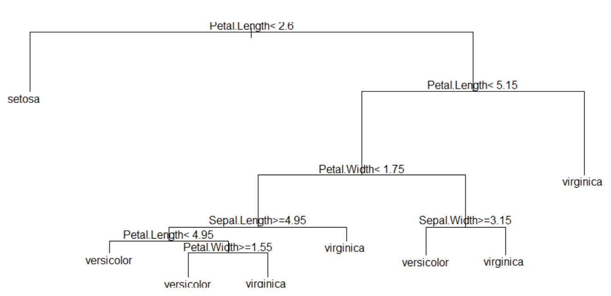
|
The R command to reclassify the entire iris data using the bagging model is as follows.
# classify the iris data using the adaboosting model
adaboostpred <- predict(iris.adaboost, newdata=iris) |
table(adaboostpred$class, iris[,5])
setosa versicolor virginica
setosa 50 0 0
versicolor 0 50 0
virginica 0 0 50
|
# calculate the misclassification error
adaboosttb <- table(adaboostpred$class, iris[,5]) |
| adaboosterror <- 1-(sum(diag(adaboosttb))/sum(adaboosttb)) |
# misclassification error is 2.67%
adaboosterror
[1] 0
|
Python practice
[Colab]
# Import required libraries
import pandas as pd
import numpy as np
from sklearn.ensemble import AdaBoostClassifier
from sklearn.tree import DecisionTreeClassifier, plot_tree
from sklearn.metrics import confusion_matrix
import matplotlib.pyplot as plt
from sklearn.datasets import load_iris
# Load iris dataset
iris = load_iris()
iris_df = pd.DataFrame(data=iris.data, columns=iris.feature_names)
iris_df['Species'] = iris.target
species_map = {0: 'setosa', 1: 'versicolor', 2: 'virginica'}
iris_df['Species'] = iris_df['Species'].map(species_map)
# AdaBoost with decision trees (mfinal=10 iterations, boos=TRUE)
adaboost_model = AdaBoostClassifier(
n_estimators=10,
random_state=0)
X = iris_df.drop('Species', axis=1)
y = iris_df['Species']
adaboost_model.fit(X, y)
# Feature importance
importance = adaboost_model.feature_importances_
feature_names = iris.feature_names
importance_df = pd.Series(importance, index=feature_names)
print("Feature Importance:\n", importance_df)
# List of trees (equivalent to iris.adaboost$trees)
trees = adaboost_model.estimators_
print("List of Trees (number of trees):", len(trees))
for i, tree in enumerate(trees, 1):
print(f"Tree {i}:", tree)
Feature Importance:
sepal length (cm) 0.000000
sepal width (cm) 0.000000
petal length (cm) 0.599859
petal width (cm) 0.400141
dtype: float64
List of Trees (number of trees): 10
Tree 1: DecisionTreeClassifier(max_depth=1, random_state=209652396)
Tree 2: DecisionTreeClassifier(max_depth=1, random_state=398764591)
Tree 3: DecisionTreeClassifier(max_depth=1, random_state=924231285)
Tree 4: DecisionTreeClassifier(max_depth=1, random_state=1478610112)
Tree 5: DecisionTreeClassifier(max_depth=1, random_state=441365315)
Tree 6: DecisionTreeClassifier(max_depth=1, random_state=1537364731)
Tree 7: DecisionTreeClassifier(max_depth=1, random_state=192771779)
Tree 8: DecisionTreeClassifier(max_depth=1, random_state=1491434855)
Tree 9: DecisionTreeClassifier(max_depth=1, random_state=1819583497)
Tree 10: DecisionTreeClassifier(max_depth=1, random_state=530702035)
|
7.6.5 Random forest
Random forest is an ensemble method designed to combine the classification results of several decision tree models.
However, it is also used when there are many variables. Each decision tree is created using a subset of variables independently
selected from all variables and then synthesized. The generation of the subset of variables can use random or
probability distributions. The bagging method using decision trees can be considered a special case of random forest.
The general random forest algorithm is as follows.
[
Random forest algorithm]
| Step 1 |
Let \( D = \{(\boldsymbol x_{1}, y_{1}), (\boldsymbol x_{2}, y_{2}), ... , (\boldsymbol x_{n}, y_{n}) \}\) be the set of training data,
and \(m\) be the number of variables.
|
| Step 2 |
Let \(R\) be the number of random forest samples. |
| Step 3 |
for k = 1 to Rdo |
| Step 4 |
\(\qquad\)Generate random forest samples \(D_{k}\) with the subset of all variables. |
| Step 5 |
\(\qquad\)Create classifier \(C_{k}\) using random forest samples \(D_{k}\) |
| Step 6 |
end for |
| Step 7 |
Classify an unknown data \(\boldsymbol x\) by the majority vote of each classifier. |
The ensemble method using random forests may not be efficient if each decision tree classifier is related to each other.
In other words, selecting a good set of variables is the key to creating an efficient random forest ensemble.
There have been many studies on selecting a set of variables and expanding the decision tree using it.
Please refer to the relevant references.
There have been many comparative studies on various ensemble methods. It is known that the efficiency of
the Adaboosting method and the random forest method is relatively good as a result of experiments using actual data.
7.6.6 R and Python practice - Random forest
This is a method that adds a random process to bagging.
The process of extracting bootstrap samples from the original data and forming a tree for each bootstrap sample is similar
to bagging, but instead of selecting the optimal split among all predictors for each node, it randomly extracts predictors
and creates the optimal split among the extracted variables. In other words, if all variables are used, it becomes bagging,
and if variables are randomly extracted and split, it becomes a random forest.
Predictions for new data are made by majority vote in the case of classification and by taking the average
in the case of regression, which is the same as other ensemble models.
To use the random forest ensemble model using R, we need to install a package called randomForest.
From the main menu of R,
select ‘Package’ => ‘Install package(s)’, and a window called ‘CRAN mirror’ will appear. Here,
select ‘0-Cloud [https]’ and click ‘OK’. Then, when the window called ‘Packages’ appears, select
‘randomForest’ and click ‘OK’. 'randomForest' is a package for modeling of the random forest ensemble model.
General usage and key arguments of the function are described in the following table.
| randomForest {randomForest} |
Classification and Regression with Random Forest
randomForest implements Breiman's random forest algorithm (based on Breiman and Cutler's original Fortran code) for classification and regression. It can also be used in unsupervised mode for assessing proximities among data points.
|
## S3 method for class 'formula'
randomForest(formula, data=NULL, ..., subset, na.action=na.fail)
## Default S3 method:
randomForest(x, y=NULL, xtest=NULL, ytest=NULL, ntree=500,
mtry=if (!is.null(y) && !is.factor(y))
max(floor(ncol(x)/3), 1) else floor(sqrt(ncol(x))),
weights=NULL,
replace=TRUE, classwt=NULL, cutoff, strata,
sampsize = if (replace) nrow(x) else ceiling(.632*nrow(x)),
nodesize = if (!is.null(y) && !is.factor(y)) 5 else 1,
maxnodes = NULL,
importance=FALSE, localImp=FALSE, nPerm=1,
proximity, oob.prox=proximity,
norm.votes=TRUE, do.trace=FALSE,
keep.forest=!is.null(y) && is.null(xtest), corr.bias=FALSE,
keep.inbag=FALSE, ...)
|
| data |
an optional data frame containing the variables in the model. By default the variables are taken from the environment which randomForest is called from. |
| subset |
an index vector indicating which rows should be used. (NOTE: If given, this argument must be named.) |
| na.action |
A function to specify the action to be taken if NAs are found. (NOTE: If given, this argument must be named.) |
| x, formula |
a data frame or a matrix of predictors, or a formula describing the model to be fitted (for the print method, an randomForest object). |
| y |
A response vector. If a factor, classification is assumed, otherwise regression is assumed. If omitted, randomForest will run in unsupervised mode. |
| xtest |
a data frame or matrix (like x) containing predictors for the test set. |
| ytest |
response for the test set. |
| ntree |
Number of trees to grow. This should not be set to too small a number, to ensure that every input row gets predicted at least a few times. |
| mtry |
Number of variables randomly sampled as candidates at each split. Note that the default values are different for classification (sqrt(p) where p is number of variables in x) and regression (p/3) |
| weights |
A vector of length same as y that are positive weights used only in sampling data to grow each tree (not used in any other calculation) |
| replace |
Should sampling of cases be done with or without replacement? |
| classwt |
Priors of the classes. Need not add up to one. Ignored for regression. |
| cutoff |
(Classification only) A vector of length equal to number of classes. The ‘winning’ class for an observation is the one with the maximum ratio of proportion of votes to cutoff. Default is 1/k where k is the number of classes (i.e., majority vote wins). |
| strata |
A (factor) variable that is used for stratified sampling. |
| samplesize |
Size(s) of sample to draw. For classification, if sampsize is a vector of the length the number of strata, then sampling is stratified by strata, and the elements of sampsize indicate the numbers to be drawn from the strata. |
| nodesize |
Minimum size of terminal nodes. Setting this number larger causes smaller trees to be grown (and thus take less time). Note that the default values are different for classification (1) and regression (5). |
| maxnodes |
Maximum number of terminal nodes trees in the forest can have. If not given, trees are grown to the maximum possible (subject to limits by nodesize). If set larger than maximum possible, a warning is issued. |
| importance |
Should casewise importance measure be computed? (Setting this to TRUE will override importance.) |
| localImp |
Should casewise importance measure be computed? (Setting this to TRUE will override importance.) |
| nPerm |
Number of times the OOB data are permuted per tree for assessing variable importance. Number larger than 1 gives slightly more stable estimate, but not very effective. Currently only implemented for regression. |
| proximity |
Should proximity measure among the rows be calculated? |
| oob.prox |
Should proximity be calculated only on “out-of-bag” data? |
| norm.votes |
If TRUE (default), the final result of votes are expressed as fractions. If FALSE, raw vote counts are returned (useful for combining results from different runs). Ignored for regression. |
| do.trace |
If set to TRUE, give a more verbose output as randomForest is run. If set to some integer, then running output is printed for every do.trace trees. |
| keep.forest |
If set to FALSE, the forest will not be retained in the output object. If xtest is given, defaults to FALSE. |
| corr.bias |
perform bias correction for regression? Note: Experimental. Use at your own risk. |
| keep.inbag |
Should an n by ntree matrix be returned that keeps track of which samples are “in-bag” in which trees (but not how many times, if sampling with replacement) |
| Value: An object of class randomForest, which is a list with the following components: |
| call |
the original call to randomForest |
| type |
one of regression, classification, or unsupervised. |
| predicted |
the predicted values of the input data based on out-of-bag samples. |
| importance |
a matrix with nclass + 2 (for classification) or two (for regression) columns. For classification, the first nclass columns are the class-specific measures computed as mean descrease in accuracy. The nclass + 1st column is the mean descrease in accuracy over all classes. The last column is the mean decrease in Gini index. For Regression, the first column is the mean decrease in accuracy and the second the mean decrease in MSE. If importance=FALSE, the last measure is still returned as a vector. |
| importanceSD |
The “standard errors” of the permutation-based importance measure. For classification, a p by nclass + 1 matrix corresponding to the first nclass + 1 columns of the importance matrix. For regression, a length p vector. |
| localImp |
a p by n matrix containing the casewise importance measures, the [i,j] element of which is the importance of i-th variable on the j-th case. NULL if localImp=FALSE. |
| ntree |
number of trees grown. |
| mtry |
number of predictors sampled for spliting at each node. |
| forest |
(a list that contains the entire forest; NULL if randomForest is run in unsupervised mode or if keep.forest=FALSE. |
| err.rate |
(classification only) vector error rates of the prediction on the input data, the i-th element being the (OOB) error rate for all trees up to the i-th. |
| confusion |
(classification only) the confusion matrix of the prediction (based on OOB data). |
| votes |
(classification only) a matrix with one row for each input data point and one column for each class, giving the fraction or number of (OOB) ‘votes’ from the random forest. |
| oob.times |
number of times cases are ‘out-of-bag’ (and thus used in computing OOB error estimate) |
| proximity |
if proximity=TRUE when randomForest is called, a matrix of proximity measures among the input (based on the frequency that pairs of data points are in the same terminal nodes). |
| mse |
(regression only) vector of mean square errors: sum of squared residuals divided by n. |
| rsq |
(regression only) “pseudo R-squared”: 1 - mse / Var(y). |
| test |
if test set is given (through the xtest or additionally ytest arguments), this component is a list which contains the corresponding predicted, err.rate, confusion, votes (for classification) or predicted, mse and rsq (for regression) for the test set. If proximity=TRUE, there is also a component, proximity, which contains the proximity among the test set as well as proximity between test and training data. |
An example of R commands for the random forest ensemble model using the iris data stored in R is as follows.
| install.packages('randomForest') |
| library(randomForest) |
| data(iris) |
| iris.forest <- randomForest(Species~., data=iris, ntree = 100, proximity=TRUE) |
The R command to reclassify the entire iris data using the random forest model is as follows.
# classify the iris data using the bagging model
table(predict(iris.forest), iris[,5])
setosa versicolor virginica
setosa 50 0 0
versicolor 0 47 6
virginica 0 3 44
|
# calculate the misclassification error
foresttb <- table(predict(iris.forest), iris[,5]) |
| foresterror <- 1-(sum(diag(foresttb))/sum(foresttb)) |
# misclassification error is 2.67%
foresterror
[1] 0.06
|
Python practice
[Colab]
# Import required libraries
import pandas as pd
import numpy as np
from sklearn.ensemble import RandomForestClassifier
from sklearn.metrics import confusion_matrix
from sklearn.datasets import load_iris
# Load iris dataset
iris = load_iris()
iris_df = pd.DataFrame(data=iris.data, columns=iris.feature_names)
iris_df['Species'] = iris.target
species_map = {0: 'setosa', 1: 'versicolor', 2: 'virginica'}
iris_df['Species'] = iris_df['Species'].map(species_map)
# Random Forest with 100 trees and proximity
rf_model = RandomForestClassifier(n_estimators=100,
random_state=0,
oob_score=True) # oob_score approximates proximity
X = iris_df.drop('Species', axis=1)
y = iris_df['Species']
rf_model.fit(X, y)
# Predict on the iris dataset
rf_pred = rf_model.predict(X)
# Confusion matrix
conf_matrix = confusion_matrix(y, rf_pred, labels=['setosa', 'versicolor', 'virginica'])
conf_matrix_df = pd.DataFrame(conf_matrix,
index=['setosa', 'versicolor', 'virginica'],
columns=['setosa', 'versicolor', 'virginica'])
print("Confusion Matrix:\n", conf_matrix_df)
# Calculate misclassification error
forest_error = 1 - (np.diag(conf_matrix).sum() / conf_matrix.sum())
print("Misclassification Error:", forest_error)
print("Misclassification Error (%):", forest_error * 100, "%")
Confusion Matrix:
setosa versicolor virginica
setosa 50 0 0
versicolor 0 50 0
virginica 0 0 50
Misclassification Error: 0.0
Misclassification Error (%): 0.0 %
|
7.7 Classification of multiple groups
Support vector machines and Adaboosting classification models were designed as a two-group classification method.
However, in reality, classification problems of multiple groups often occur, so a method of applying
a two-group classification model to classification problems of multiple groups has been studied.
When there are \(K\) classification groups, Let us denote them as \(G_{1},G_{2}, ... , G_{K}\).
One way to apply a two-group classification method to the classification of multiple groups is to view the remaining groups
as one group for each group \(G_{i}\), and view it as a two-group problem of {\(G_{i}\), other groups}.
This is called the (1 : \(K-1\)) method. The second method is to classify the \(K\) groups into two pairwise groups
{\(G_{i}, G_{j}\)}, which requires the creation of \({}_{K} C_{2} = \frac{K(K-1)}{2}\) classifiers, and it is called
the (1:1) method. When creating a classifier, data that do not belong to two groups {\(G_{i}, G_{j}\)} are ignored.
When classifying data whose group membership is unknown, a method of applying multiple classifiers and
classifying them into one group by majority vote is often used. There is a possibility of obtaining equal votes
when using a majority vote. To prevent this, if the results of the two-group classification are expressed
as the probability of belonging to each group, then these are combined to classify them into the group
with the higher probability.
Example 7.7.1 (Classification of multiple groups)
Suppose there are 4 classification groups {\(G_{1}, G_{2}, G_{3}, G_{4}\)} and Let us apply the (1:3) method.
For example, if (\(G_{1} : \{G_{2}, G_{3}, G_{4}\}\)), was applied to one data whose group affiliation was unknown,
it was classified into \(G_{1}\) group, Let us denote it as + group. if (\(G_{2} : \{G_{1}, G_{3}, G_{4}\}\))
was applied to the data, it was classified into \(\{G_{1}, G_{3}, G_{4}\}\) group, Let us denote it as - group.
Similarly, if (\(G_{3} : \{G_{1}, G_{2}, G_{4}\}\)) was applied to the data, it was classified into
\(\{G_{1}, G_{2}, G_{4}\}\) group, which is - group, if (\(G_{4} : \{G_{1}, G_{2}, G_{3}\}\)) was applied to the data,
it was classified into \(\{G_{1}, G_{2}, G_{3}\}\) group, which is - group. The classification results are
summarized as in Table 7.7.1. What is the final classification result of the data using (1:3) method?
| Table 7.7.1 Classification results of (1:3) method |
| Method (1:3) groups |
+ : \(G_{1}\)
- : \(\{G_{2}, G_{3}, G_{4}\}\) |
+ : \(G_{2}\)
- : \(\{G_{1}, G_{3}, G_{4}\}\) |
+ : \(G_{3}\)
- : \(\{G_{1}, G_{2}, G_{4}\}\) |
+ : \(G_{4}\)
- : \(\{G_{1}, G_{2}, G_{3}\}\) |
| Classification result |
+ |
- |
- |
- |
When we applied the (1:1) method to the same data, there are 6 classification and their classification results
are summarized as in Table 7.7.2. What is the final classification result of the data using (1:1) method?
| Table 7.7.2 Classification results of (1:3) method |
| Method (1:1) groups |
+ : \(G_{1}\)
- : \(G_{2}\) |
+ : \(G_{1}\)
- : \(G_{3}\) |
+ : \(G_{1}\)
- : \(G_{4}\) |
+ : \(G_{2}\)
- : \(G_{3}\) |
+ : \(G_{2}\)
- : \(G_{4}\) |
+ : \(G_{3}\)
- : \(G_{4}\) |
| Classification result |
+ |
+ |
- |
+ |
- |
+ |
Answer
The classification results of (1:3) method ,as shown in Table 7.7.1 means that \(G_{1}\) group receives 4 votes
and the other groups receive 2 votes. Therefore, the data is classified into the \(G_{1}\) group by the majority vote.
When applying the (1:1) method, the \(G_{1}\) and \(G_{4}\) groups receive 2 votes, and the \(G_{2}\) and \(G_{3}\) groups
receive 1 vote, and are classified into the \(G_{1}\) or \(G_{4}\) group.
7.8 Exercise
7.1 The SAT scores (out of 100) and essay scores of 10 accepted applicants, denoted P,
for a college, 10 failed applicants, denoted F, are as follows.
| Group | SAT | Essay |
| P | 96 | 95 |
| P | 86 | 83 |
| P | 76 | 88 |
| P | 73 | 89 |
| P | 85 | 80 |
| P | 83 | 81 |
| P | 92 | 80 |
| P | 93 | 95 |
| P | 87 | 90 |
| P | 92 | 90 |
| N | 76 | 70 |
| N | 82 | 70 |
| N | 80 | 80 |
| N | 70 | 85 |
| N | 65 | 75 |
| N | 71 | 72 |
| N | 72 | 80 |
| N | 70 | 65 |
| N | 64 | 70 |
| N | 73 | 80 |
1) Assuming that the distributions of the two groups are multivariate normal distributions with the same covariance,
find a Bayesian classification function. Assume that the prior probability of each group is 0.5.
Classify whether a student with an 80 SAT and an essay score of 80 will enter the university.
2) Find a Logistic regression function.
Classify whether a student with an 80 SAT and an essay score of 80 will enter the university.
3) Classify whether a student with an 80 SAT and an essay score of 80 will enter the university
using the 3-nearest neighbor classification model.
4) Apply a neural network model.
Classify whether a student with an 80 SAT and an essay score of 80 will enter the university.
5) Apply a support vector model.
Classify whether a student with an 80 SAT and an essay score of 80 will enter the university.
7.2 The following is a survey of 10 people visiting a department store to determine
whether they purchased a product and their age. Those who purchased were denoted as Y, those who did not purchase
were denoted as N. The data were sorted in ascending order of age. We want to divide age into two groups
to apply a decision tree model. What is the best boundary value for the division?
| Group | Age |
| N | 25 |
| N | 27 |
| N | 31 |
| Y | 33 |
| N | 35 |
| Y | 41 |
| N | 43 |
| Y | 49 |
| Y | 51 |
| Y | 55 |